B2 · Opus 5.5 · attempt osAXn5w
Batch tb8 · job tb8_B_EXP22004082_26_Oct_2022_claude-opus-5-5 · trial B_EXP22004082_26_Oct_2022__osAXn5w. Long tool outputs are cut at 6,000 characters.
0.68
33.1
$8.31
669
121
cat /task/inputs/plan.md; echo; cat /task/inputs/plate_layout.csv; ls -la /task/inputs/raw/ /task/outputs/ 2>&1
# Plan: EXP22004082 | Testing Flow Cytometry based Caspase Assays (run of 2022-10-25 / 2022-10-26) Notebook text as written by the scientist, up to acquisition of this run. Sections belonging to other runs of this entry are omitted. Row and column labels in the plate tables were added for readability. ## Background Loss of function of PGRN has been shown to negatively impact neural cell health reflected by increased cell death and caspase activity. Caspases are important mediators of the cell death pathway (apoptosis). Caspases are a group of proteases that result in cleavage of protein substrates subsequently leading to cell disassembly. For the PGRN RNAswap program we will want to measure caspase activity in iPSC derived neurons before and after adding the PGRN RNAswap constructs to ensure that PGRN protein replacement is rescuing the health of neurons. Previously I have tested out some caspase activity kits but now I will be trying to detect caspase levels using flow cytometry. ## Objective Measure caspase 3 activity using flow cytometry in H4 cells to practice using this assay which will eventually be used in iPSC derived neurons. ## Materials (entry-level list) - H4 WT cells - H4 PGRN KO E1 - H4 PGRN KO E3 - H4 media - CellEvent Caspase-3/7 Green Flow Cytometry Assay Kit - Cell Signalling (Cleaved Caspase-3 (Asp175) Antibody (Alexa Fluor® 488 Conjugate) #9669) - Camptothecin (abcam) ## DAY 2022-10-25 Test out Cell Signaling Cleaved-Caspase 3 Alexa-flour 488 antibody - Split H4 cells into 24 well plate (50K cells/well) | | 1 | 2 | 3 | 4 | 5 | 6 | |---|---|---|---|---|---|---| | A | WT | WT | WT | WT | WT | WT | | B | E1 | E1 | E1 | E1 | E1 | E1 | | C | E3 | E3 | E3 | E3 | E3 | E3 | | D | | | | | | | 2. Let cells grow for o/n ## DAY 2022-10-26 Run Intracellular flow: ### Materials - 96w round bottom plate - Intracellular Fixation & Permeabilization Buffer Set (cat. no. 88-8824) - Flow Cytometry Staining Buffer (cat. no. 00-4222) - Zombie NIR Biolgend (423105) - Caspase-3 antibody (9669S) ### Procedure - Aspirate all media - PBS wash (200uL PBS) - Aspirate PBS - Add 10x Trypsin (150ul/well) - Put back in incubator (5min) - Add FBS (75ul/well) - Move all solution and cells to a round-bottom 96w plate. Check the empty plate by microscope to confirm that the majority of cells were lifted - Spin down (300g, 5min) - PBS wash (200uL PBS) - Aspirate PBS - Stain with Zombie NIR (1:200 dilution in PBS, 150ul/well) - Put back in incubator (15min) - Spin down and remove all Zombie NIR with a P200 multichannel - Fix the cells in IC Fixation Buffer (200uL/well, 30min, RT, dark). Pipet gently to resuspend cells - Spin down (400-600g, 5min, RT) (400xg this time) - Remove all solution with a P200 multichannel **Do not throw fix down the drain!! Collect and add to waste container in hood - Permeabilize the cells in 1X Permeabilization Buffer (200uL/well, 30min, RT, dark). - Spin down (400-600g, 5min, RT). - Remove all solution with a P200 multichannel **Do not throw fix down the drain!! Collect and add to waste container in hood - Resuspend cells with 100uL/well with 1X Permeabilization Buffer. - Prepare antibodies in 100 uL/well of 1x Permeabilization Buffer. Example: for a final 1:200 dilution, add 1 ul Ab to 100 ul of pearmeabilization buffer. Add to well which already has 100 ul of buffer (final dilution is 1:200). Without washing, add the antibody solution of intracellular antigen(s) to cells and incubate for at least 30 minutes at RT and protect from light. Alternatively, incubate overnight at 4C (200ul/well, dark). For Caspase antibody: 1:50 (4uL into 96uL buffer). Will also try 1:100 (2uL into 98uL buffer) - Spin down (400-600g, 5 min, RT) - Add 200 µL of 1X Permeabilization Buffer to each well and centrifuge samples at 400-600 x g (400xg this time) at room temperature for 5 minutes. Discard the supernatant. - Repeat last step - Resuspend stained cells in an appropriate volume of Flow Cytometry Staining Buffer. - Analyze by flow cytometry (ATTUNE). ### Attune Voltage Settings FSC-20; SSC-290; BL1 (caspase)-250; RL3 (Zombie NIR)-350 ### Flow plate (96-well) | | 1 | 2 | 3 | 4 | 5 | 6 | 7 | 8 | 9 | 10 | 11 | 12 | |---|---|---|---|---|---|---|---|---|---|---|---|---| | A | WT no stain | WT caspase only (1:100) | WT zombie only | WT-1 caspase @ 1:100 | WT-2 caspase @ 1:50 | WT-3 caspase @ 1:50 | E1 no stain | E1 caspase only (1:100) | E1 zombie only | E1-1 caspase @ 1:100 | E1-2 caspase @1:50 | E1-3 caspase @ 1:50 | | B | E3 no stain | E3 caspase only (1:100) | E3 zombie only | E3-1 @ 1:100 | E3-2 caspase @ 1:50 | E3-3 caspase @ 1:50 | | | | | | | file,well,sample,cell_line Caspase_h4_mlk(4)_caspase_Group_A1_WT_no stain.fcs,A1,WT no stain,WT Caspase_h4_mlk(4)_caspase_Group_A2_Wt_caspase_1-100.fcs,A2,WT caspase only (1:100),WT Caspase_h4_mlk(4)_caspase_Group_A3_Wt_zombie.fcs,A3,WT zombie only,WT Caspase_h4_mlk(4)_caspase_Group_A4_Wt-1_1-100.fcs,A4,WT-1 caspase @ 1:100,WT Caspase_h4_mlk(4)_caspase_Group_A5_wt-2_1-50.fcs,A5,WT-2 caspase @ 1:50,WT Caspase_h4_mlk(4)_caspase_Group_A6_wt3_1-50.fcs,A6,WT-3 caspase @ 1:50,WT Caspase_h4_mlk(4)_caspase_Group_A7_E1_no stain.fcs,A7,E1 no stain,E1 Caspase_h4_mlk(4)_caspase_Group_A8_E1_caspase_1-100.fcs,A8,E1 caspase only (1:100),E1 Caspase_h4_mlk(4)_caspase_Group_A9_E1_zombie.fcs,A9,E1 zombie only,E1 Caspase_h4_mlk(4)_caspase_Group_A10_E1-1_1-100.fcs,A10,E1-1 caspase @ 1:100,E1 Caspase_h4_mlk(4)_caspase_Group_A11_E1-2_1-50.fcs,A11,E1-2 caspase @1:50,E1 Caspase_h4_mlk(4)_caspase_Group_A12_E1-3_1-50.fcs,A12,E1-3 caspase @ 1:50,E1 Caspase_h4_mlk(4)_caspase_Group_B1_E3_no stain.fcs,B1,E3 no stain,E3 Caspase_h4_mlk(4)_caspase_Group_B2_E3_caspase_1-100.fcs,B2,E3 caspase only (1:100),E3 Caspase_h4_mlk(4)_caspase_Group_B3_E3_zombie.fcs,B3,E3 zombie only,E3 Caspase_h4_mlk(4)_caspase_Group_B4_E3-1_1-100.fcs,B4,E3-1 @ 1:100,E3 Caspase_h4_mlk(4)_caspase_Group_B5_E3-2_1-50.fcs,B5,E3-2 caspase @ 1:50,E3 Caspase_h4_mlk(4)_caspase_Group_B6_E3-3-1-50.f … [1,972 more characters not shown]
cd /task/inputs; file start.flow; head -c 3000 start.flow; echo; wc -c start.flow
/bin/bash: line 1: file: command not found
- !workflow-item;5
channels: []
conditions: {}
current_view: null
metadata: {}
operation: !import;4
channels_list: []
conditions:
well: category
sample: category
cell_line: category
events: null
ignore_v_bool: false
name_metadata: null
tubes:
- !tube;1
conditions:
well: 'A1'
sample: 'WT no stain'
cell_line: 'WT'
file: '/task/inputs/raw/Caspase_h4_mlk(4)_caspase_Group_A1_WT_no stain.fcs'
- !tube;1
conditions:
well: 'A2'
sample: 'WT caspase only (1:100)'
cell_line: 'WT'
file: '/task/inputs/raw/Caspase_h4_mlk(4)_caspase_Group_A2_Wt_caspase_1-100.fcs'
- !tube;1
conditions:
well: 'A3'
sample: 'WT zombie only'
cell_line: 'WT'
file: '/task/inputs/raw/Caspase_h4_mlk(4)_caspase_Group_A3_Wt_zombie.fcs'
- !tube;1
conditions:
well: 'A4'
sample: 'WT-1 caspase @ 1:100'
cell_line: 'WT'
file: '/task/inputs/raw/Caspase_h4_mlk(4)_caspase_Group_A4_Wt-1_1-100.fcs'
- !tube;1
conditions:
well: 'A5'
sample: 'WT-2 caspase @ 1:50'
cell_line: 'WT'
file: '/task/inputs/raw/Caspase_h4_mlk(4)_caspase_Group_A5_wt-2_1-50.fcs'
- !tube;1
conditions:
well: 'A6'
sample: 'WT-3 caspase @ 1:50'
cell_line: 'WT'
file: '/task/inputs/raw/Caspase_h4_mlk(4)_caspase_Group_A6_wt3_1-50.fcs'
- !tube;1
conditions:
well: 'A7'
sample: 'E1 no stain'
cell_line: 'E1'
file: '/task/inputs/raw/Caspase_h4_mlk(4)_caspase_Group_A7_E1_no stain.fcs'
- !tube;1
conditions:
well: 'A8'
sample: 'E1 caspase only (1:100)'
cell_line: 'E1'
file: '/task/inputs/raw/Caspase_h4_mlk(4)_caspase_Group_A8_E1_caspase_1-100.fcs'
- !tube;1
conditions:
well: 'A9'
sample: 'E1 zombie only'
cell_line: 'E1'
file: '/task/inputs/raw/Caspase_h4_mlk(4)_caspase_Group_A9_E1_zombie.fcs'
- !tube;1
conditions:
well: 'A10'
sample: 'E1-1 caspase @ 1:100'
cell_line: 'E1'
file: '/task/inputs/raw/Caspase_h4_mlk(4)_caspase_Group_A10_E1-1_1-100.fcs'
- !tube;1
conditions:
well: 'A11'
sample: 'E1-2 caspase @1:50'
cell_line: 'E1'
file: '/task/inputs/raw/Caspase_h4_mlk(4)_caspase_Group_A11_E1-2_1-50.fcs'
- !tube;1
conditions:
well: 'A12'
sample: 'E1-3 caspase @ 1:50'
cell_line: 'E1'
file: '/task/inputs/raw/Caspase_h4_mlk(4)_caspase_Group_A12_E1-3_1-50.fcs'
- !tube;1
conditions:
well: 'B1'
sample: 'E3 no stain'
cell_line: 'E3'
file: '/task/inputs/raw/Caspase_h4_mlk(4)_caspase_Group_B1_E3_no stain.fcs'
- !tube;1
conditions:
well: 'B2'
sample: 'E3 caspase only (1:100)'
cell_line: 'E3'
file: '/task/inputs/raw/Caspase_h4_mlk(4)_caspase_Group_B2_E3_caspase_1
3800 start.flowcd /task; cu screenshot /tmp/screen.png
/tmp/screen.png
{
"file_path": "/tmp/screen.png"
}
cd /task; cu click 915 493; sleep 1; cu click 90 75; sleep 2; cu screenshot /tmp/screen.png
{
"file_path": "/tmp/screen.png"
}/tmp/screen.png
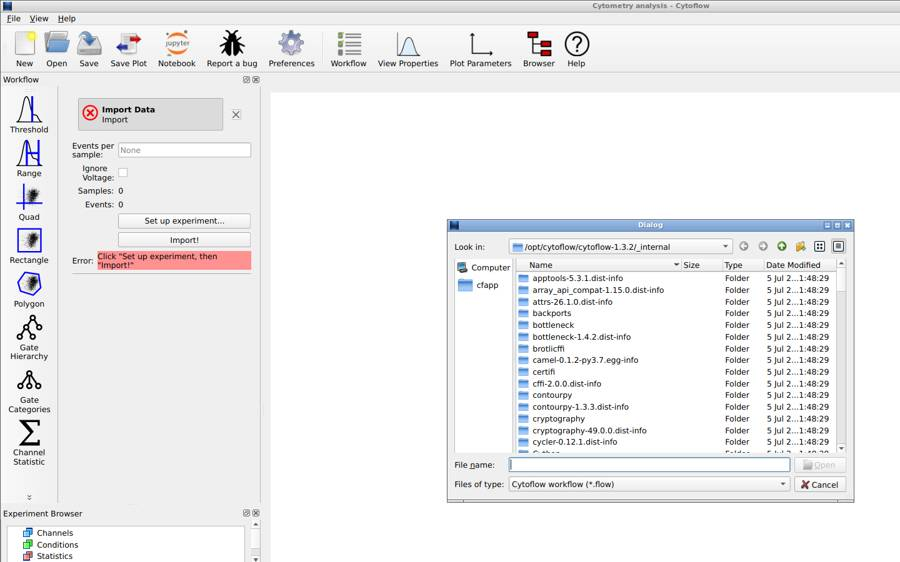
cd /task; cu click 1038 744; cu paste "/task/inputs/start.flow"; sleep 0.5; cu key Return; sleep 2; cu screenshot /tmp/screen.png
{
"file_path": "/tmp/screen.png"
}/tmp/screen.png

cd /task; cu click 746 449; sleep 20; cu screenshot /tmp/screen.png
{
"file_path": "/tmp/screen.png"
}/tmp/screen.png

cd /task; cu click 230 183; sleep 2; cu screenshot /tmp/screen.png
{
"file_path": "/tmp/screen.png"
}/tmp/screen.png

cd /task; cu drag 210 809 210 430; sleep 1; cu screenshot /tmp/screen.png
{
"file_path": "/tmp/screen.png"
}/tmp/screen.png
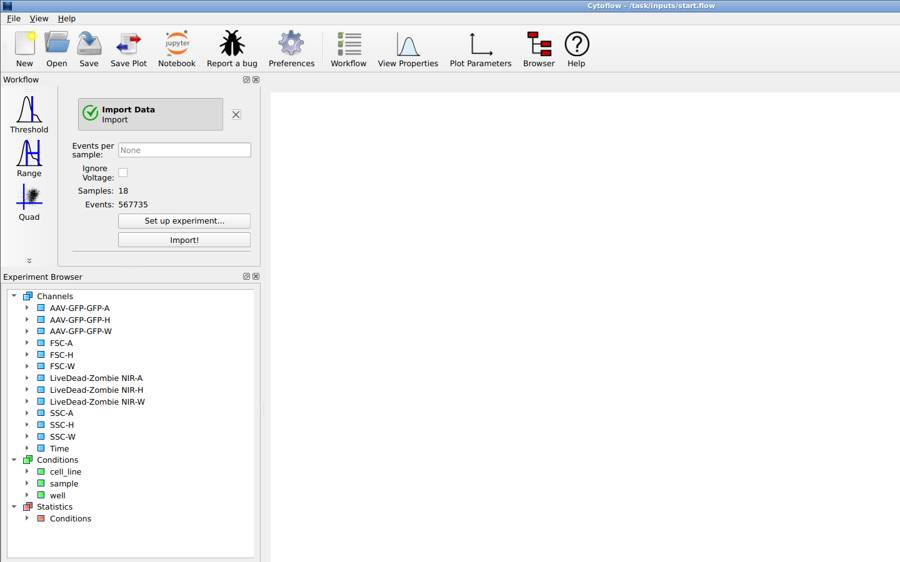
cd /task; cu click 43 493; sleep 1; cu screenshot /tmp/screen.png
{
"file_path": "/tmp/screen.png"
}/tmp/screen.png
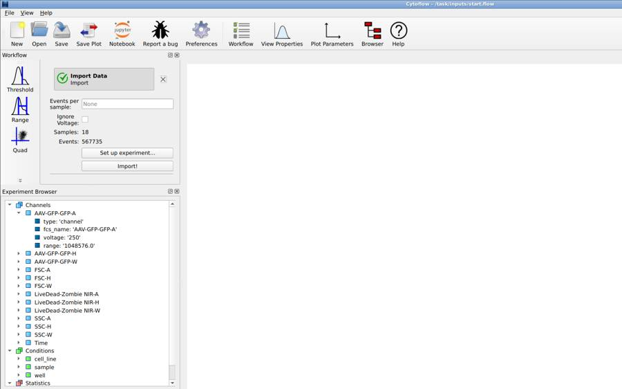
cd /task; cu click 43 493; sleep 0.5; cu click 43 605; sleep 0.5; cu click 43 548; sleep 0.5; cu screenshot /tmp/screen.png
{
"file_path": "/tmp/screen.png"
}/tmp/screen.png
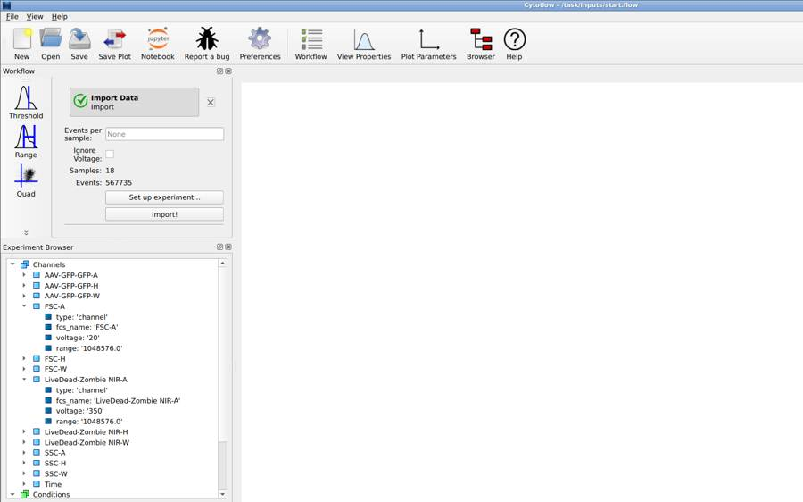
cd /task; cu click 43 548; cu click 43 586; cu drag 210 430 210 700; sleep 0.5; cu click 652 75; sleep 2; cu screenshot /tmp/screen.png
{
"file_path": "/tmp/screen.png"
}/tmp/screen.png
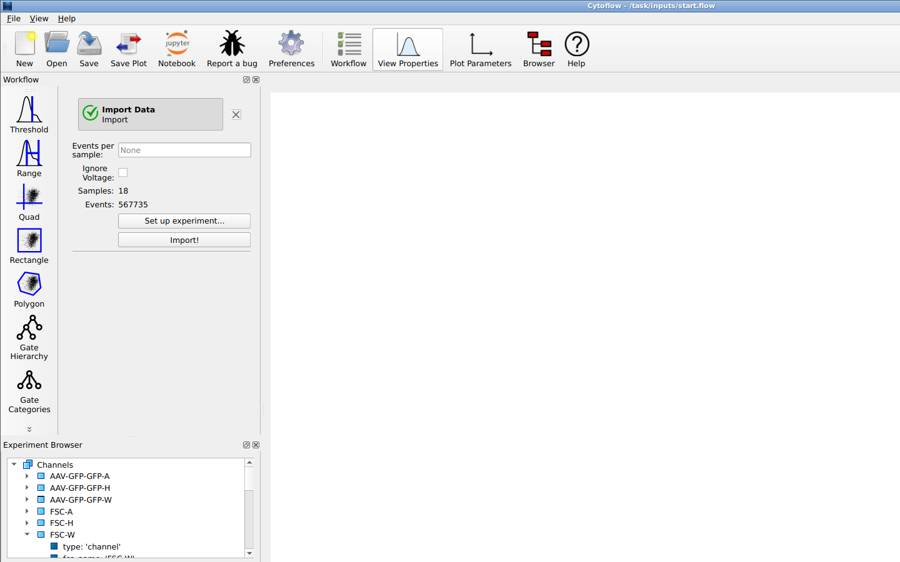
thinking
The import finished with 18 files and 567,735 events, and the channel voltages match the plan (GFP on BL1, Zombie NIR on RL3). I'm opening the plot view panel to start gating next.
cd /task; cu click 652 75; sleep 2; cu screenshot /tmp/screen.png
{
"file_path": "/tmp/screen.png"
}/tmp/screen.png

cd /task; cu click 700 9 double; sleep 2; cu screenshot /tmp/screen.png
{
"file_path": "/tmp/screen.png"
}/tmp/screen.png
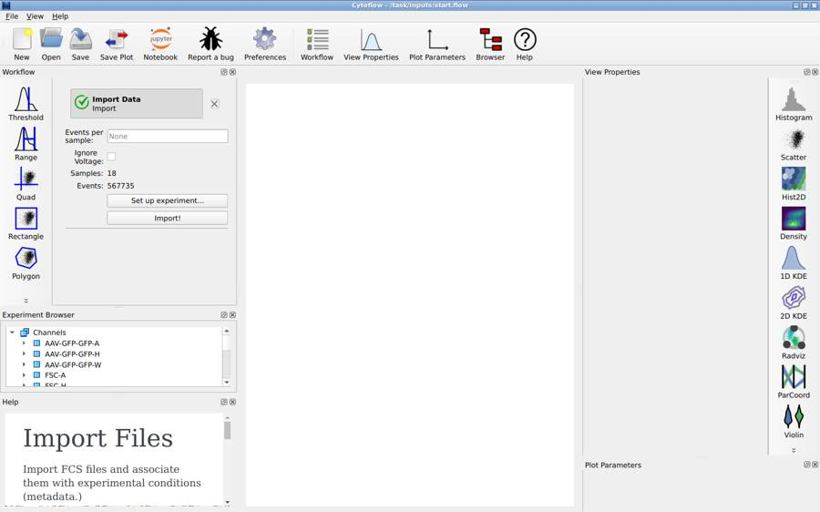
cd /task; cu click 408 706; sleep 1; cu click 1393 384; sleep 3; cu screenshot /tmp/screen.png
{
"file_path": "/tmp/screen.png"
}/tmp/screen.png
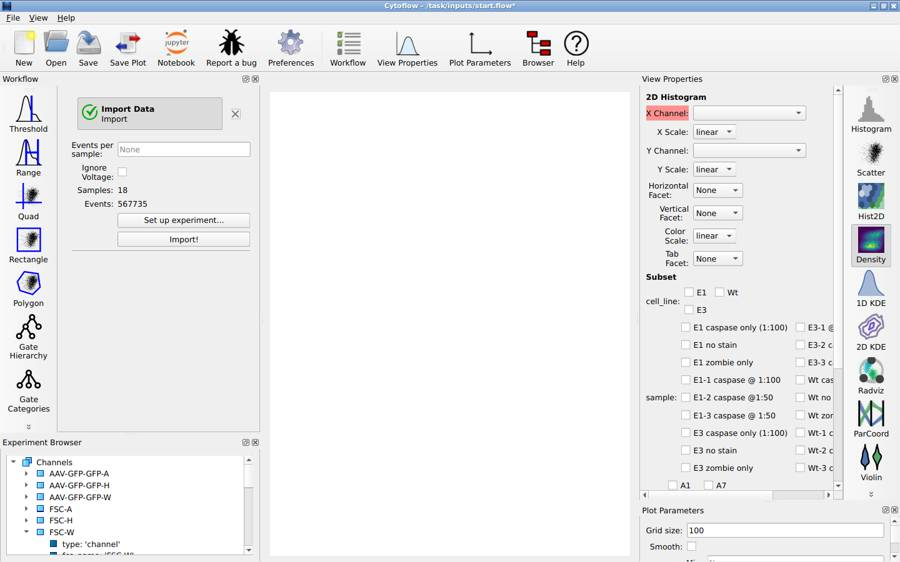
cd /task; grep -n "sample:" inputs/start.flow
10: sample: category 19: sample: 'WT no stain' 25: sample: 'WT caspase only (1:100)' 31: sample: 'WT zombie only' 37: sample: 'WT-1 caspase @ 1:100' 43: sample: 'WT-2 caspase @ 1:50' 49: sample: 'WT-3 caspase @ 1:50' 55: sample: 'E1 no stain' 61: sample: 'E1 caspase only (1:100)' 67: sample: 'E1 zombie only' 73: sample: 'E1-1 caspase @ 1:100' 79: sample: 'E1-2 caspase @1:50' 85: sample: 'E1-3 caspase @ 1:50' 91: sample: 'E3 no stain' 97: sample: 'E3 caspase only (1:100)' 103: sample: 'E3 zombie only' 109: sample: 'E3-1 @ 1:100' 115: sample: 'E3-2 caspase @ 1:50' 121: sample: 'E3-3 caspase @ 1:50'
cd /task; cu click 1198 181; sleep 1; cu screenshot /tmp/screen.png
{
"file_path": "/tmp/screen.png"
}/tmp/screen.png
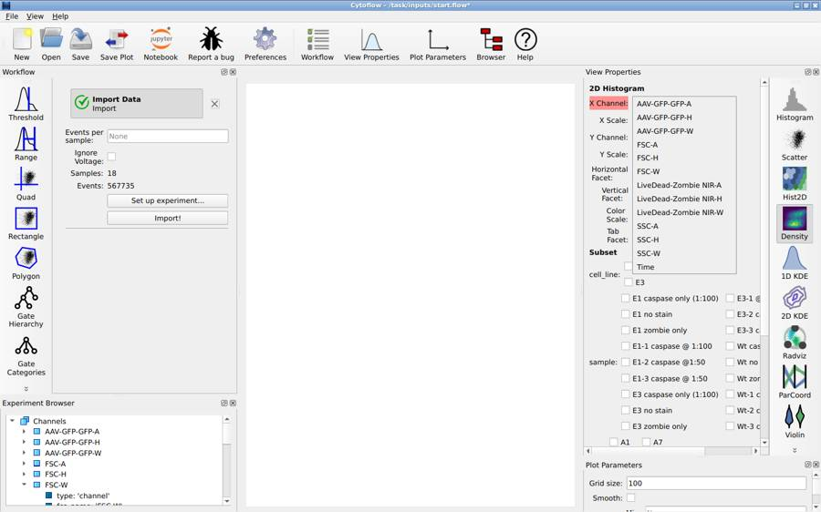
cd /task; cu click 1135 254; sleep 1; cu click 1198 241; sleep 1; cu screenshot /tmp/screen.png
{
"file_path": "/tmp/screen.png"
}/tmp/screen.png
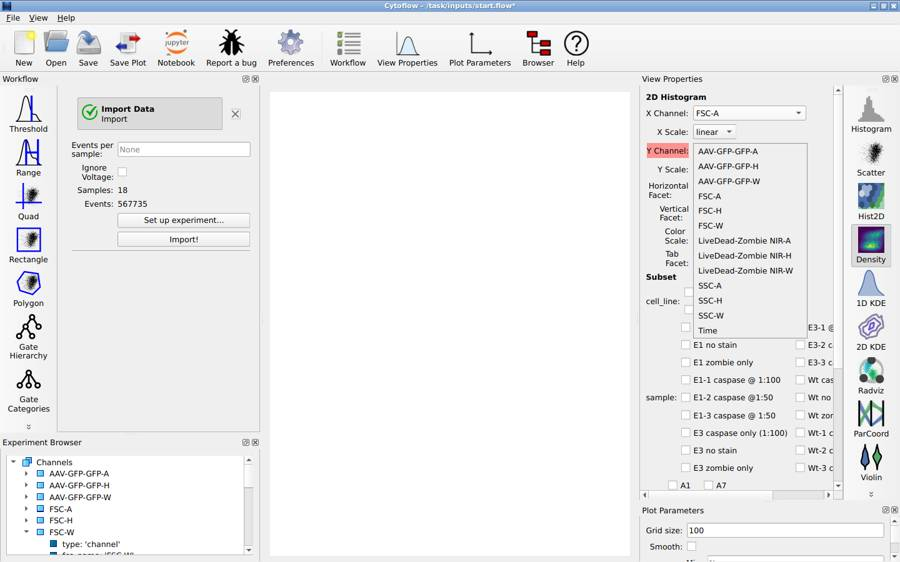
cd /task; cu click 1135 457; sleep 5; cu screenshot /tmp/screen.png
{
"file_path": "/tmp/screen.png"
}/tmp/screen.png
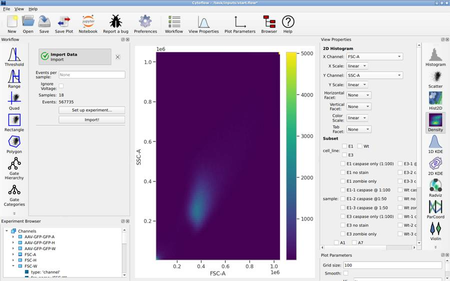
cd /task; cu click 1140 377; sleep 1; cu screenshot /tmp/screen.png
{
"file_path": "/tmp/screen.png"
}/tmp/screen.png
cd /task; cu click 1127 402; sleep 1; cu click 1148 414; sleep 1; cu screenshot /tmp/screen.png
{
"file_path": "/tmp/screen.png"
}/tmp/screen.png
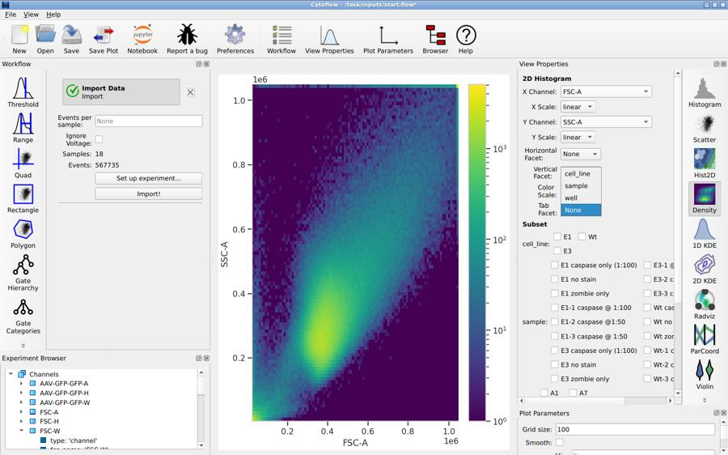
cd /task; cu click 1130 391; sleep 5; cu screenshot /tmp/screen.png
{
"file_path": "/tmp/screen.png"
}/tmp/screen.png
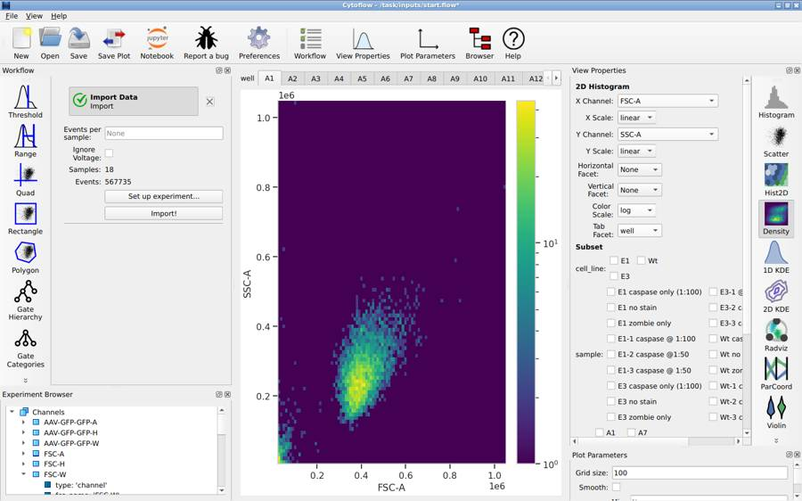
cd /task; cu drag 420 510 250 510; sleep 1; cu drag 1019 510 1150 510; sleep 3; cu screenshot /tmp/screen.png
{
"file_path": "/tmp/screen.png"
}/tmp/screen.png
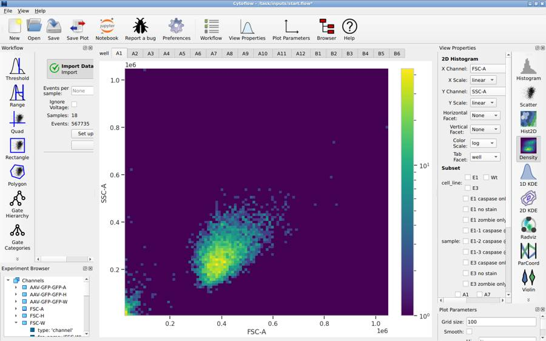
mkdir -p /tmp/shots /tmp/scripts; cat > /tmp/scripts/tabs.sh << 'EOF'
#!/bin/bash
# usage: tabs.sh prefix
P=$1
XS=(314 355 397 439 480 522 564 605 647 693 743 793 839 880 922 963 1005 1047)
NM=(A1 A2 A3 A4 A5 A6 A7 A8 A9 A10 A11 A12 B1 B2 B3 B4 B5 B6)
for i in ${!XS[@]}; do
cu click ${XS[$i]} 141 >/dev/null
sleep ${WAIT:-2.5}
cu screenshot /tmp/shots/${P}_${NM[$i]}.png >/dev/null
done
EOF
chmod +x /tmp/scripts/tabs.sh
cat > /tmp/scripts/montage.py << 'EOF'
import sys, matplotlib
matplotlib.use('Agg')
import matplotlib.pyplot as plt, matplotlib.image as mpimg
P=sys.argv[1]; box=[int(v) for v in sys.argv[2].split(',')] if len(sys.argv)>2 else [262,160,1140,890]
NM="A1 A2 A3 A4 A5 A6 A7 A8 A9 A10 A11 A12 B1 B2 B3 B4 B5 B6".split()
fig,axs=plt.subplots(3,6,figsize=(24,12),dpi=70)
for ax,n in zip(axs.flat,NM):
im=mpimg.imread(f'/tmp/shots/{P}_{n}.png')
x0,y0,x1,y1=box
ax.imshow(im[y0:y1,x0:x1]); ax.set_title(n,fontsize=16); ax.axis('off')
plt.tight_layout(); plt.savefig(f'/tmp/shots/{P}_montage.png')
EOF
cd /task; /tmp/scripts/tabs.sh fsc && python3 /tmp/scripts/montage.py fsc && echo ok{
"file_path": "/tmp/shots/fsc_montage.png"
}ok
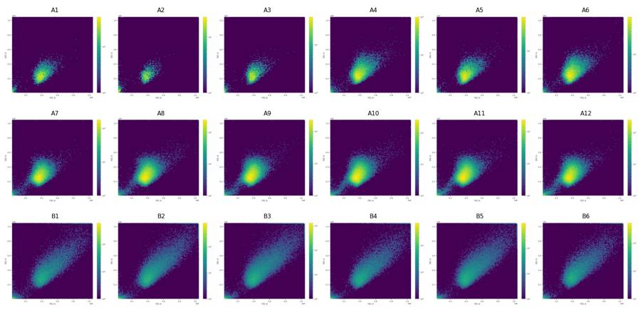
thinking
E3 wells (row B) scatter diagonally and pile up at the FSC/SSC maximum, which suggests clumps and saturation. Next I'm adding the `cells` polygon gate.
cd /task; cu click 45 460; sleep 2; cu drag 250 510 420 510; sleep 2; cu screenshot /tmp/screen.png
{
"file_path": "/tmp/screen.png"
}/tmp/screen.png
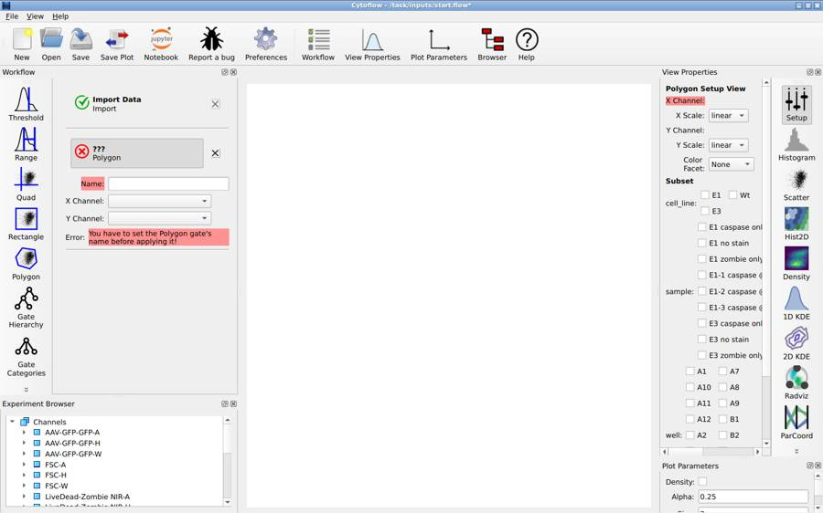
cd /task; cu click 294 322; cu type "cells"; cu key Tab; sleep 1; cu click 279 352; sleep 1; cu screenshot /tmp/screen.png
{
"file_path": "/tmp/screen.png"
}/tmp/screen.png
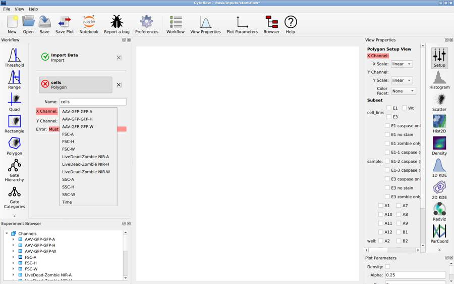
cd /task; cu click 215 425; sleep 1; cu click 279 383; sleep 1; cu screenshot /tmp/screen.png
{
"file_path": "/tmp/screen.png"
}/tmp/screen.png
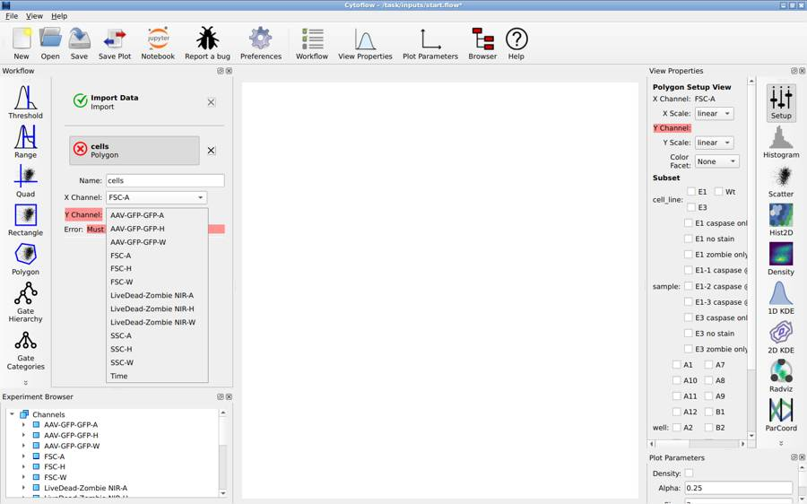
cd /task; cu click 215 599; sleep 2; cu click 1229 845; sleep 1; cu drag 420 510 250 510; sleep 6; cu screenshot /tmp/screen.png
{
"file_path": "/tmp/screen.png"
}/tmp/screen.png
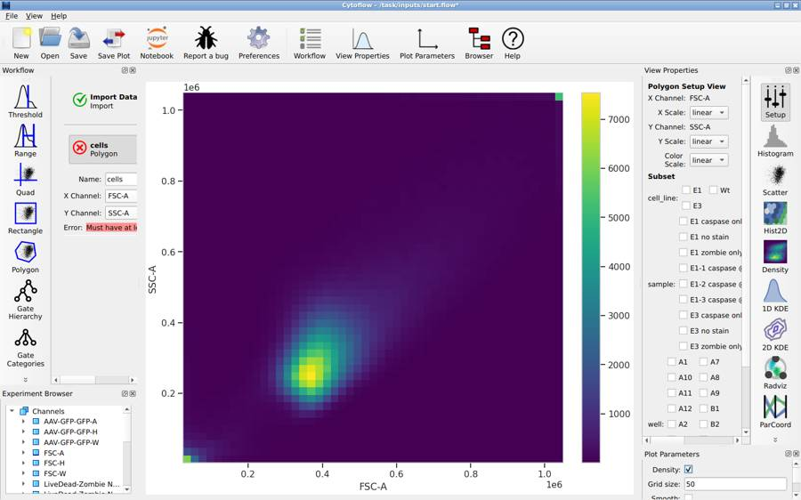
cd /task; cu click 1274 288; sleep 1; cu screenshot /tmp/screen.png
{
"file_path": "/tmp/screen.png"
}/tmp/screen.png
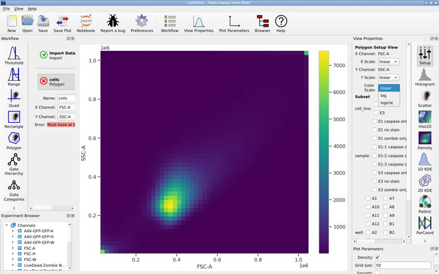
cd /task; cu click 1258 313; sleep 1; cu click 1320 871; cu key ctrl+a; cu type "100"; cu key Return; sleep 6; cu screenshot /tmp/screen.png
{
"file_path": "/tmp/screen.png"
}/tmp/screen.png
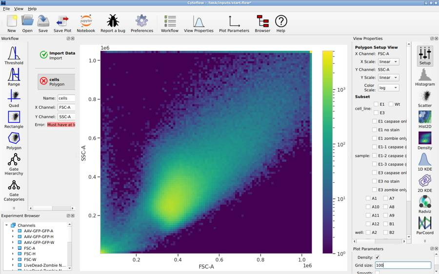
cd /task; cu click 427 797; sleep 0.5; cu click 617 797; sleep 0.5; cu click 991 485; sleep 0.5; cu click 991 198; sleep 0.5; cu click 719 198; sleep 0.5; cu click 427 580 double; sleep 4; cu screenshot /tmp/screen.png
{
"file_path": "/tmp/screen.png"
}/tmp/screen.png
cd /task; cu drag 250 510 420 510; sleep 3; cu screenshot /tmp/screen.png
{
"file_path": "/tmp/screen.png"
}/tmp/screen.png
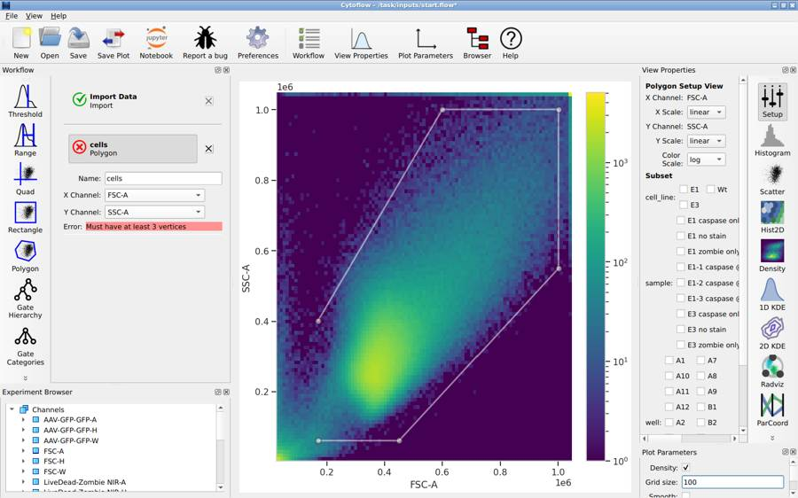
cd /task; cu click 575 797; sleep 4; cu screenshot /tmp/screen.png
{
"file_path": "/tmp/screen.png"
}/tmp/screen.png
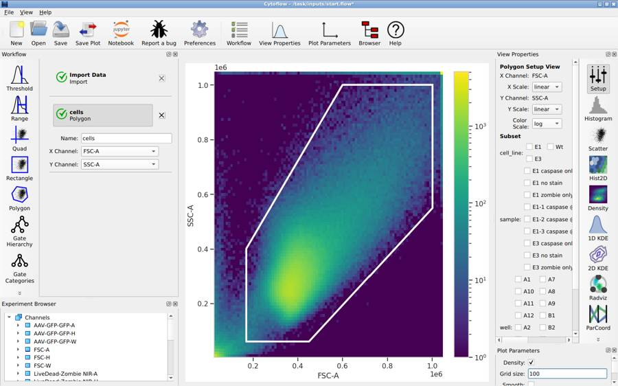
cd /task; cu click 20 28; sleep 1; cu screenshot /tmp/screen.png
{
"file_path": "/tmp/screen.png"
}/tmp/screen.png
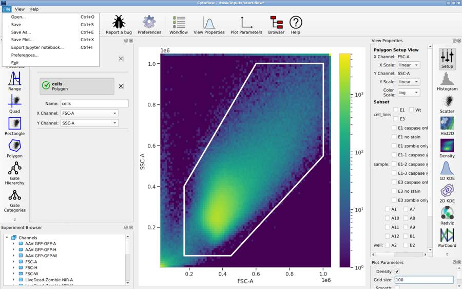
cd /task; cu click 65 100; sleep 2; cu screenshot /tmp/screen.png
{
"file_path": "/tmp/screen.png"
}/tmp/screen.png
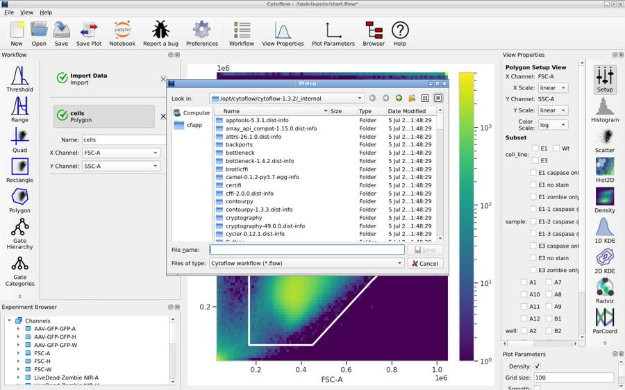
cd /task; cu click 706 576; cu paste "/task/outputs/workflow.flow"; sleep 0.5; cu key Return; sleep 3; cu screenshot /tmp/screen.png; ls -la /task/outputs; grep -n -A30 "polygon" /task/outputs/workflow.flow | head -50
/tmp/screen.png total 32 drwxrwsrwx 2 agent task 4096 Nov 6 00:39 . drwxr-xr-x 4 root root 4096 Nov 5 22:08 .. -rw-rw-r-- 1 cfapp task 20911 Nov 6 00:39 workflow.flow 691: current_view: &id005 !polygon-view;3 692- current_plot: null 693- huefacet: '' 694- huescale: log 695: op: &id004 !polygon;1 696- name: cells 697- vertices: 698- - !!python/tuple 699- - 169022.76965991486 700- - 61798.25811500302 701- - !!python/tuple 702- - 450372.6237633957 703- - 61798.25811500302 704- - !!python/tuple 705- - 1002310.3156931751 706- - 550173.3348210388 707- - !!python/tuple 708- - 1002310.3156931751 709- - 1000981.0979343025 710- - !!python/tuple 711- - 601040.8516439484 712- - 1000981.0979343025 713- - !!python/tuple 714- - 169022.76965991486 715- - 401537.44191050617 716- - !!python/tuple 717- - 169022.76965991486 718- - 401537.44191050617 719- xchannel: FSC-A 720- xscale: linear 721- ychannel: SSC-A 722- yscale: linear 723: plot_params: !polygon-params;1 724- alpha: 0.25 725- col_wrap: null 726- density: true 727- despine: true 728- gridsize: 100 729- huelabel: '' 730- legend: true 731- marker: o 732- max_quantile: 1.0 733- min_quantile: 0.001 734- s: 2 735- sharex: true 736- sharey: true 737- smoothed: false 738- smoothed_sigma: 1.0 739- sns_context: notebook 740- sns_style: whitegrid
cd /task; cu click 45 460; sleep 2; cu click 294 408; cu type "singlets"; cu key Tab; sleep 1; cu click 279 438; sleep 1; cu screenshot /tmp/screen.png
{
"file_path": "/tmp/screen.png"
}/tmp/screen.png
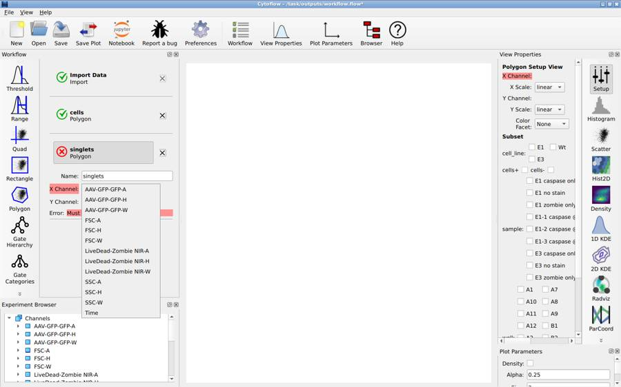
cd /task; cu click 215 512; sleep 1; cu click 279 469; sleep 1; cu screenshot /tmp/screen.png
{
"file_path": "/tmp/screen.png"
}/tmp/screen.png
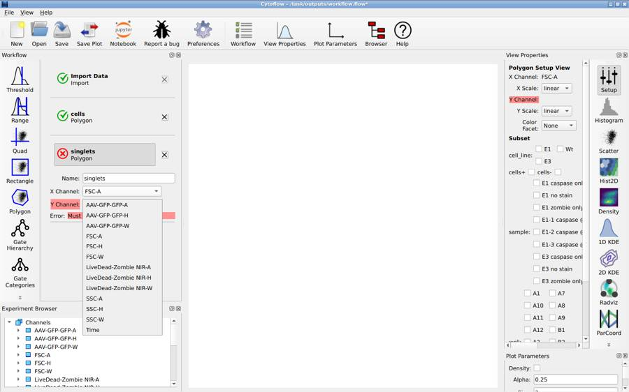
cd /task; cu click 215 565; sleep 2; cu click 1216 395; sleep 2; cu click 1229 845; sleep 2; cu screenshot /tmp/screen.png
{
"file_path": "/tmp/screen.png"
}/tmp/screen.png
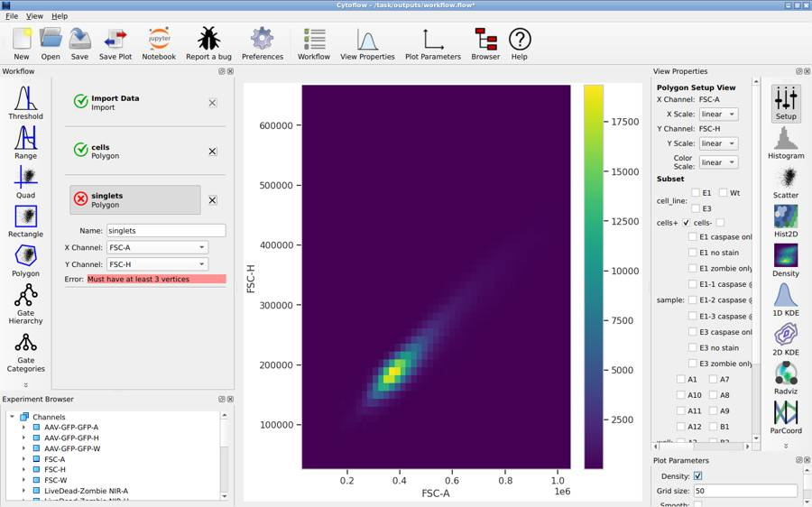
cd /task; cu click 1274 288; sleep 1; cu click 1258 313; sleep 1; cu click 1320 871; cu key ctrl+a; cu type "100"; cu key Return; sleep 6; cu screenshot /tmp/screen.png
{
"file_path": "/tmp/screen.png"
}/tmp/screen.png
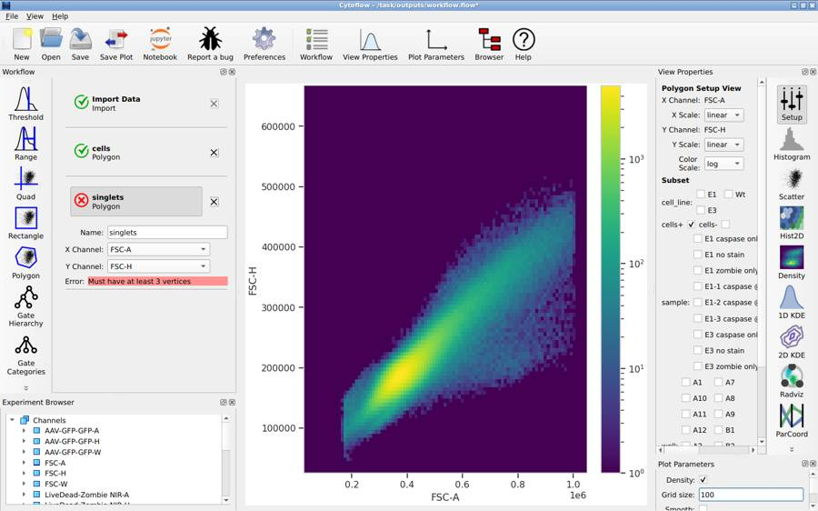
cd /task; cu click 1393 455; sleep 3; cu screenshot /tmp/screen.png
{
"file_path": "/tmp/screen.png"
}/tmp/screen.png
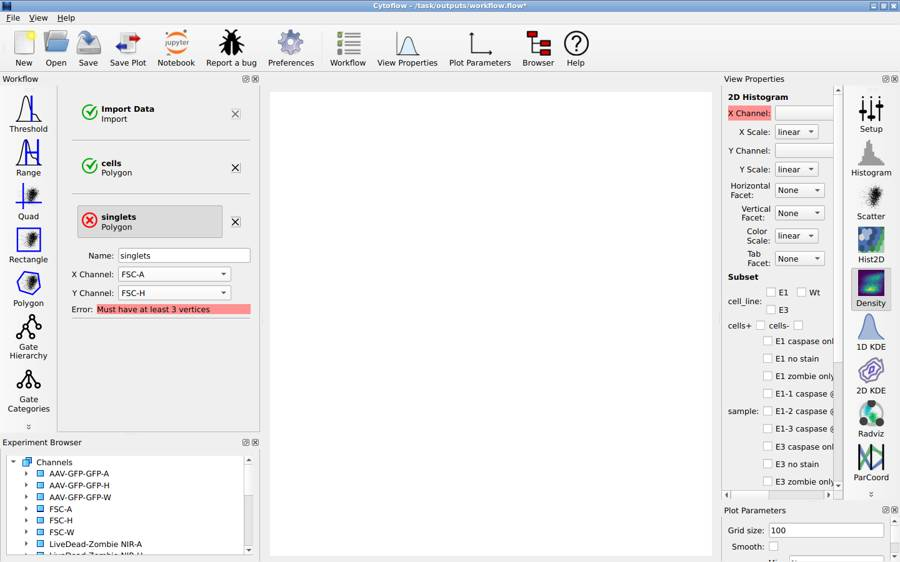
cd /task; cu click 1285 181; sleep 1; cu screenshot /tmp/screen.png
{
"file_path": "/tmp/screen.png"
}/tmp/screen.png
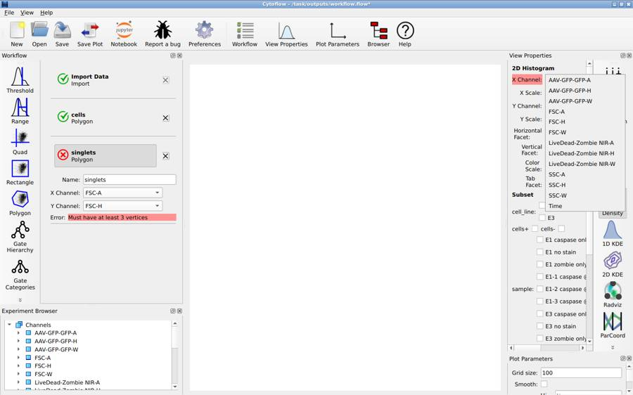
cd /task; cu click 1266 254; sleep 1; cu click 1285 241; sleep 1; cu screenshot /tmp/screen.png
{
"file_path": "/tmp/screen.png"
}/tmp/screen.png
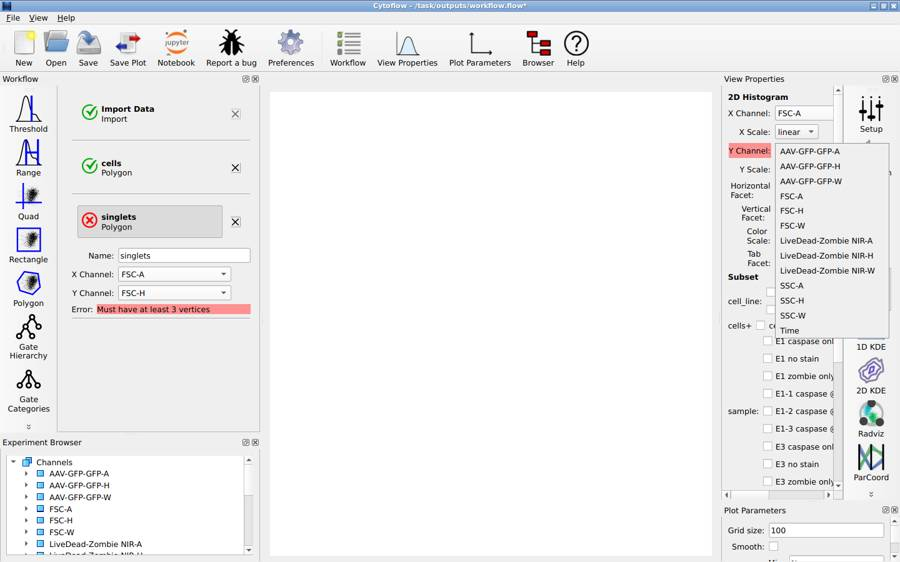
cd /task; cu click 1266 337; sleep 1; cu click 1274 377; sleep 1; cu screenshot /tmp/screen.png
{
"file_path": "/tmp/screen.png"
}/tmp/screen.png
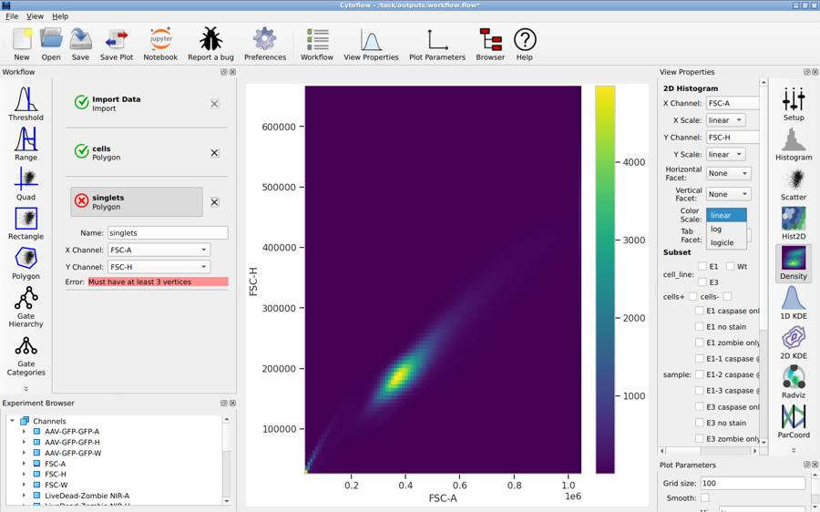
cd /task; cu click 1258 402; sleep 2; cu click 1280 414; sleep 1; cu screenshot /tmp/screen.png
{
"file_path": "/tmp/screen.png"
}/tmp/screen.png
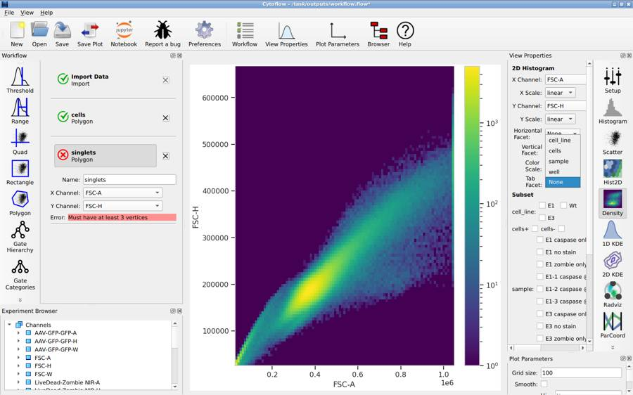
cd /task; cu click 1262 391; sleep 2; cu click 1216 521; sleep 1; cu drag 420 510 250 510; sleep 5; cu screenshot /tmp/screen.png
{
"file_path": "/tmp/screen.png"
}/tmp/screen.png
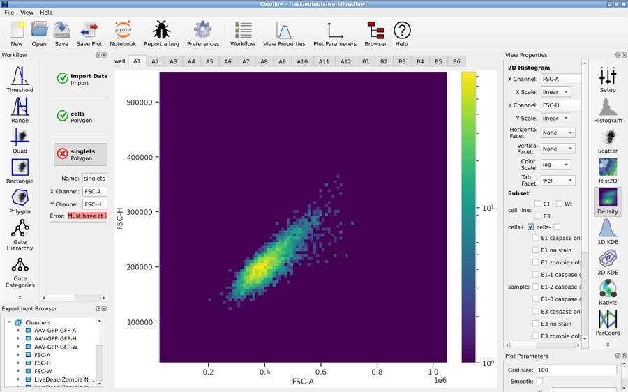
cd /task; /tmp/scripts/tabs.sh sing && python3 /tmp/scripts/montage.py sing && echo ok
{
"file_path": "/tmp/shots/sing_montage.png"
}ok
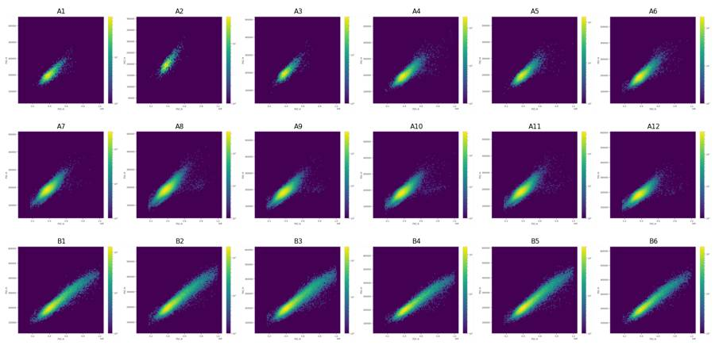
cd /task; cu click 1393 180; sleep 4; cu screenshot /tmp/screen.png
{
"file_path": "/tmp/screen.png"
}/tmp/screen.png
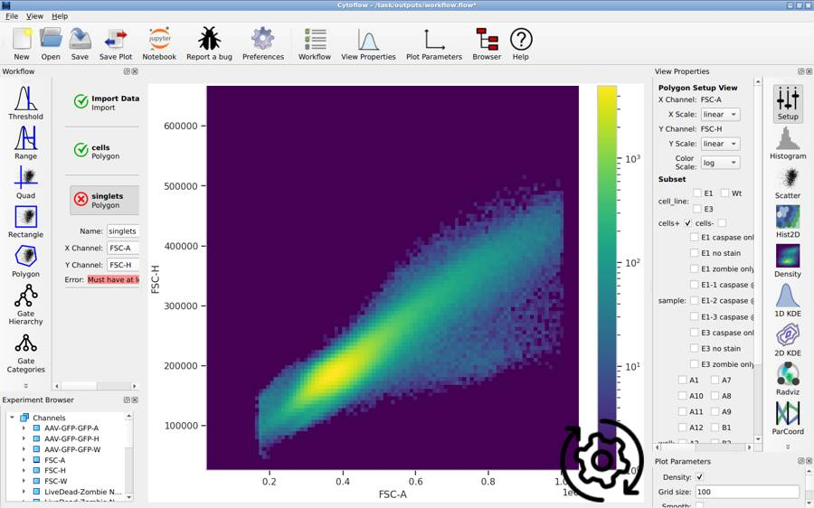
cd /task; sleep 3; cu screenshot /tmp/screen.png
{
"file_path": "/tmp/screen.png"
}/tmp/screen.png
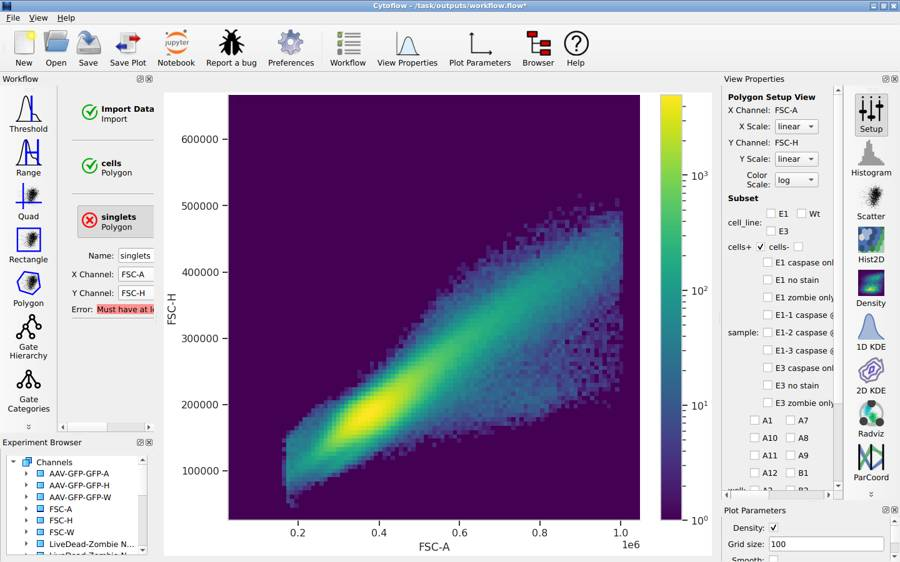
cd /task; for p in "451 807" "638 722" "1006 477" "1006 265" "670 509" "451 680" "451 807"; do cu click $p; sleep 0.6; done; sleep 4; cu screenshot /tmp/screen.png
{
"file_path": "/tmp/screen.png"
}/tmp/screen.png
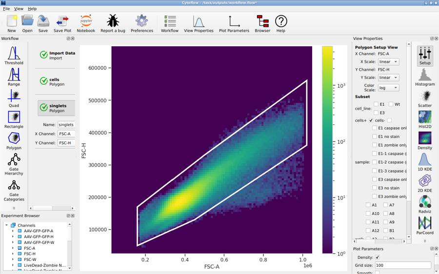
cd /task; cu key ctrl+s; sleep 2; grep -c "polygon;1" outputs/workflow.flow; cu click 45 250; sleep 2; cu drag 250 510 420 510; sleep 2; cu screenshot /tmp/screen.png
{
"file_path": "/tmp/screen.png"
}2 /tmp/screen.png
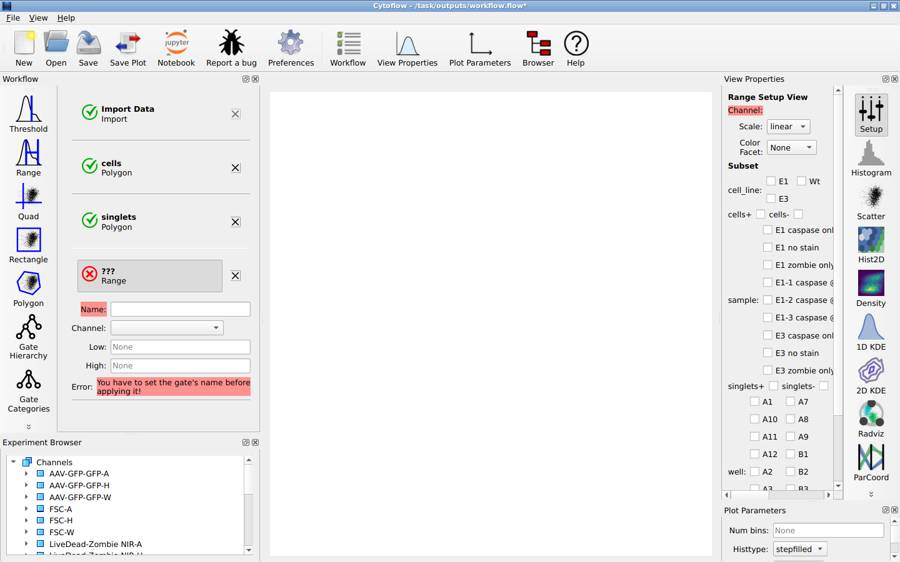
cd /task; cu click 288 495; cu type "live"; cu key Tab; sleep 1; cu click 267 525; sleep 1; cu screenshot /tmp/screen.png
{
"file_path": "/tmp/screen.png"
}/tmp/screen.png
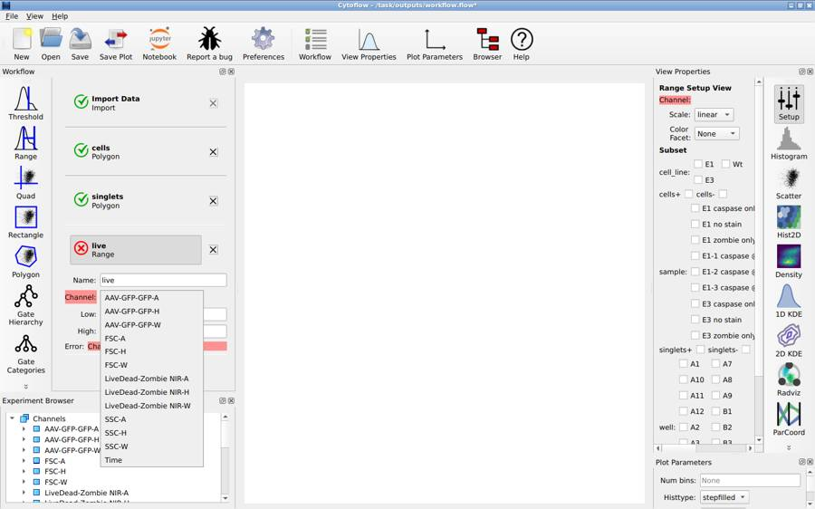
cd /task; cu click 258 669; sleep 1; cu click 1216 343; sleep 0.5; cu click 1237 618; sleep 0.5; cu click 1262 202; sleep 1; cu screenshot /tmp/screen.png
{
"file_path": "/tmp/screen.png"
}/tmp/screen.png
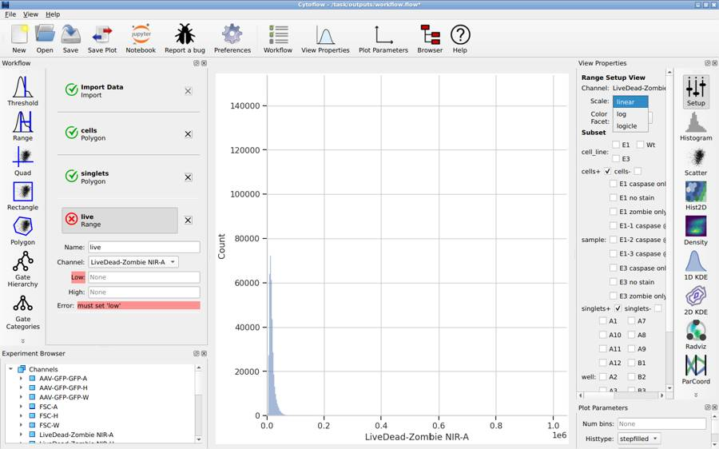
cd /task; cu click 1255 252; sleep 5; cu screenshot /tmp/screen.png
{
"file_path": "/tmp/screen.png"
}/tmp/screen.png
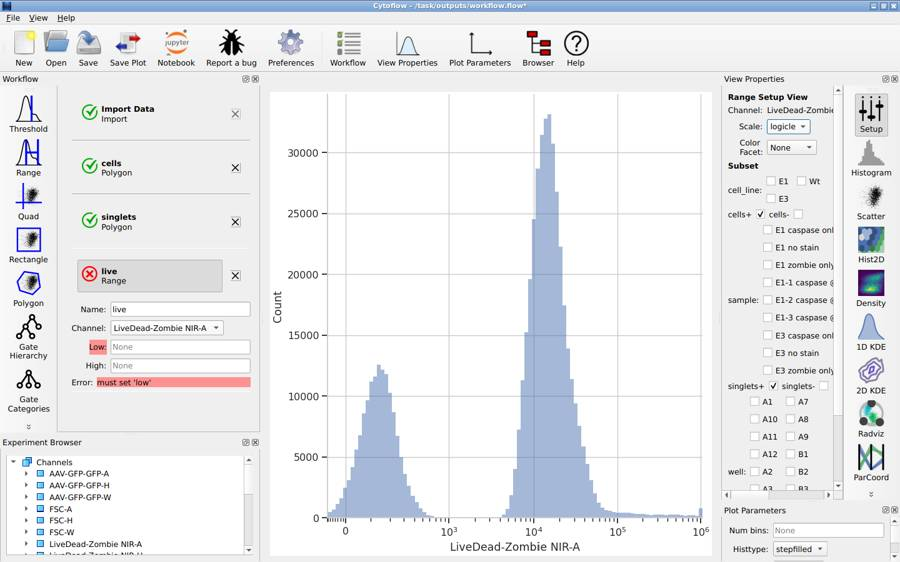
cd /task; cu click 1393 250; sleep 3; cu screenshot /tmp/screen.png
{
"file_path": "/tmp/screen.png"
}/tmp/screen.png
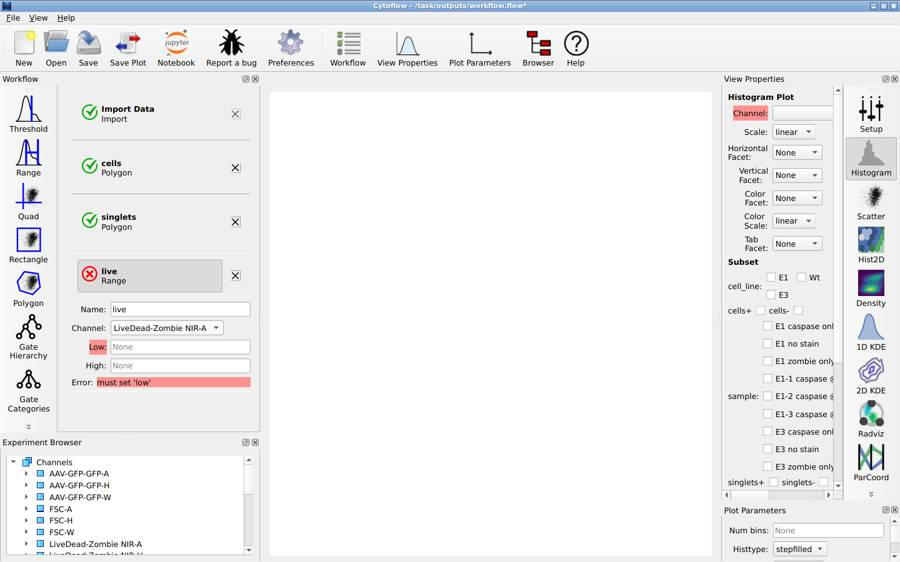
cd /task; cu click 1285 181; sleep 1; cu click 1300 326; sleep 1; cu click 1270 211; sleep 1; cu screenshot /tmp/screen.png
{
"file_path": "/tmp/screen.png"
}/tmp/screen.png
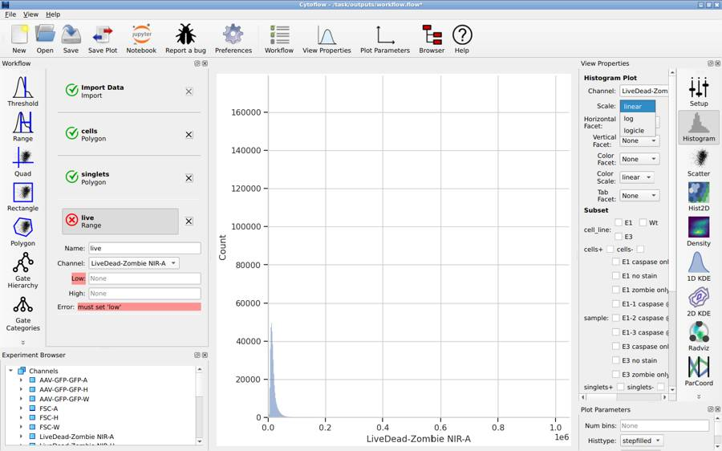
cd /task; cu click 1264 260; sleep 2; cu click 1275 390; sleep 1; cu screenshot /tmp/screen.png
{
"file_path": "/tmp/screen.png"
}/tmp/screen.png
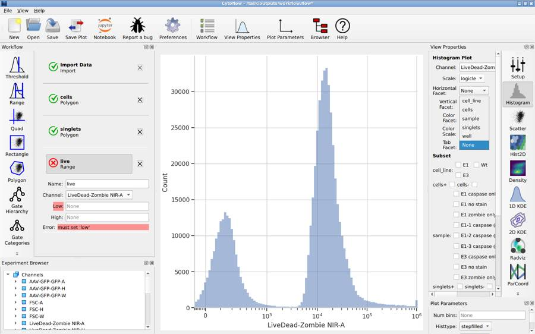
cd /task; cu click 1257 366; sleep 2; cu click 1216 497; sleep 1; cu click 1237 772; sleep 1; cu drag 420 510 250 510; sleep 4; cu screenshot /tmp/screen.png
{
"file_path": "/tmp/screen.png"
}/tmp/screen.png
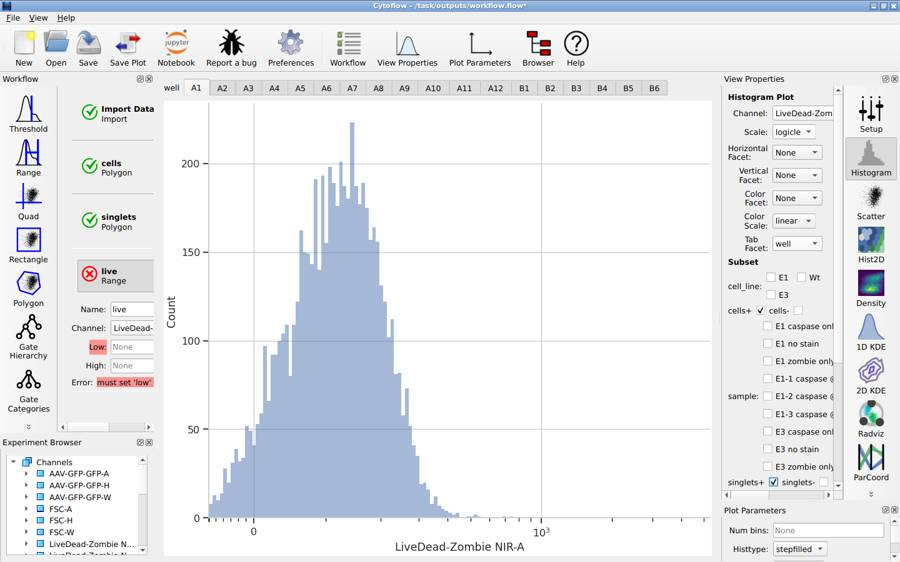
cd /task; cu click 1275 317; sleep 1; cu screenshot /tmp/screen.png
{
"file_path": "/tmp/screen.png"
}/tmp/screen.png
cd /task; cu click 1256 293; sleep 2; cu click 1275 390; sleep 1; cu screenshot /tmp/screen.png
{
"file_path": "/tmp/screen.png"
}/tmp/screen.png
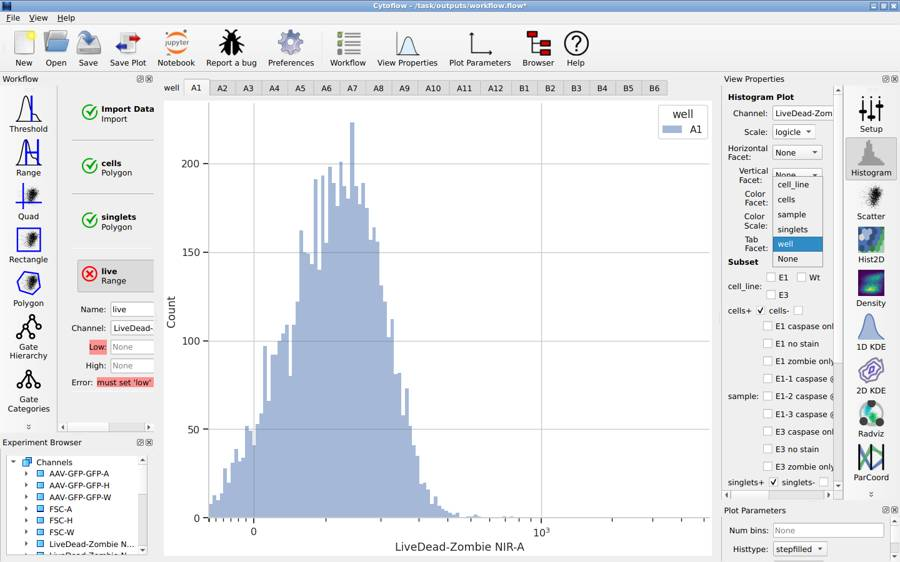
cd /task; cu click 1268 295; sleep 6; cu screenshot /tmp/screen.png
{
"file_path": "/tmp/screen.png"
}/tmp/screen.png
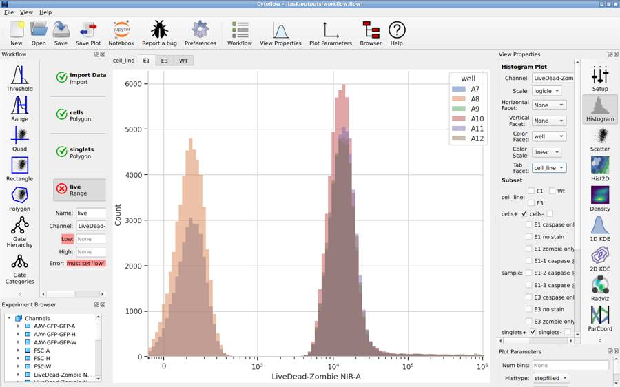
thinking
Controls look clean: the blank and caspase-only wells sit near 200, and the Zombie-stained wells peak around 1.5×10⁴ with a dead-cell tail above 5×10⁴. Checking E3 and WT next.
cd /task; cu click 381 141; sleep 4; cu screenshot /tmp/shots/z_E3.png; cu click 426 141; sleep 4; cu screenshot /tmp/shots/z_WT.png; python3 -c "
import matplotlib; matplotlib.use('Agg')
import matplotlib.pyplot as plt, matplotlib.image as m
f,a=plt.subplots(1,2,figsize=(18,8),dpi=70)
for ax,n in zip(a,['E3','WT']):
ax.imshow(m.imread(f'/tmp/shots/z_{n}.png')[160:890,262:1140]); ax.set_title(n); ax.axis('off')
plt.tight_layout(); plt.savefig('/tmp/shots/z_m.png')"{
"file_path": "/tmp/shots/z_m.png"
}/tmp/shots/z_E3.png /tmp/shots/z_WT.png
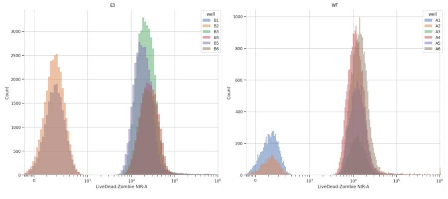
cd /task; cu click 1275 317; sleep 1; cu click 1260 414; sleep 2; cu click 1275 390; sleep 1; cu screenshot /tmp/screen.png
{
"file_path": "/tmp/screen.png"
}/tmp/screen.png
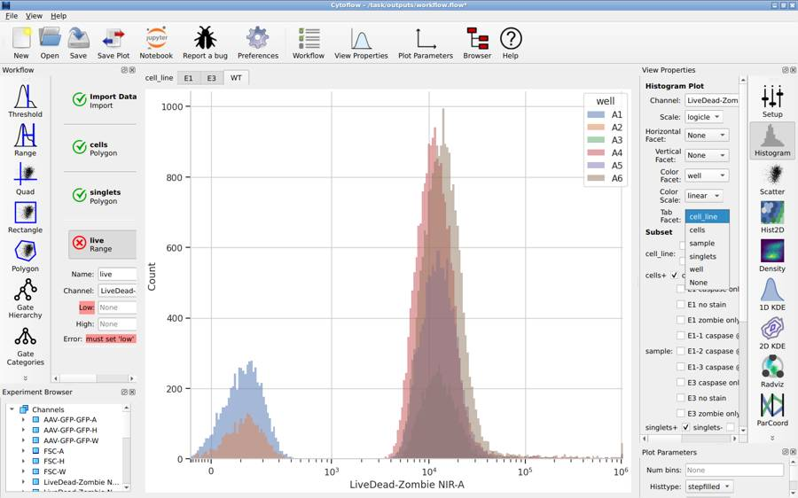
cd /task; cu click 1256 486; sleep 2; cu click 1275 317; sleep 1; cu screenshot /tmp/screen.png
{
"file_path": "/tmp/screen.png"
}/tmp/screen.png
cd /task; cu click 1260 341; sleep 2; for t in "839 B1" "880 B2" "922 B3" "963 B4" "1005 B5" "1047 B6"; do set -- $t; cu click $1 141; sleep 3; cu screenshot /tmp/shots/zw_$2.png; done; python3 -c "
import matplotlib; matplotlib.use('Agg')
import matplotlib.pyplot as plt, matplotlib.image as m
f,a=plt.subplots(2,3,figsize=(21,12),dpi=60)
for ax,n in zip(a.flat,['B1','B2','B3','B4','B5','B6']):
ax.imshow(m.imread(f'/tmp/shots/zw_{n}.png')[160:890,262:1140]); ax.set_title(n,fontsize=20); ax.axis('off')
plt.tight_layout(); plt.savefig('/tmp/shots/zw_m.png')"{
"file_path": "/tmp/shots/zw_m.png"
}/tmp/shots/zw_B1.png /tmp/shots/zw_B2.png /tmp/shots/zw_B3.png /tmp/shots/zw_B4.png /tmp/shots/zw_B5.png /tmp/shots/zw_B6.png
thinking
Both controls look right, so no sample is mislabelled. I'm setting the `live` cutoff at Zombie NIR-A below 7×10⁴, between the live-dim peak and the dead tail.
cd /task; cu click 210 555; cu type "-1000000"; cu key Tab; sleep 1; cu click 210 585; cu type "70000"; cu key Tab; sleep 4; cu click 1393 180; sleep 5; cu screenshot /tmp/screen.png
{
"file_path": "/tmp/screen.png"
}/tmp/screen.png
cd /task; cu key ctrl+s; sleep 2; cu click 45 180; sleep 2; cu drag 250 510 420 510; sleep 2; cu screenshot /tmp/screen.png
{
"file_path": "/tmp/screen.png"
}/tmp/screen.png
cd /task; cu click 285 581; cu type "casp3_pos"; cu key Tab; sleep 1; cu click 277 612; sleep 1; cu screenshot /tmp/screen.png
{
"file_path": "/tmp/screen.png"
}/tmp/screen.png
cd /task; cu click 243 600; sleep 1; cu click 1393 250; sleep 2; cu screenshot /tmp/screen.png
{
"file_path": "/tmp/screen.png"
}/tmp/screen.png
cd /task; cu click 1285 181; sleep 1; cu screenshot /tmp/screen.png
{
"file_path": "/tmp/screen.png"
}/tmp/screen.png
cd /task; cu click 1290 182; sleep 1; cu click 1270 211; sleep 1; cu click 1264 260; sleep 2; cu click 1275 317; sleep 1; cu screenshot /tmp/screen.png
{
"file_path": "/tmp/screen.png"
}/tmp/screen.png
cd /task; cu click 1256 293; sleep 2; cu click 1275 390; sleep 1; cu screenshot /tmp/screen.png
{
"file_path": "/tmp/screen.png"
}/tmp/screen.png
cd /task; cu click 1268 247; sleep 2; cu click 1216 497; sleep 1; cu click 1211 519; sleep 1; cu screenshot /tmp/screen.png
{
"file_path": "/tmp/screen.png"
}/tmp/screen.png
cd /task; cu scroll 1250 650 down 5; sleep 1; cu screenshot /tmp/screen.png
{
"file_path": "/tmp/screen.png"
}/tmp/screen.png
cd /task; cu click 1237 487; sleep 5; cu screenshot /tmp/shots/g_E1.png; cu click 551 141; sleep 4; cu screenshot /tmp/shots/g_E3.png; cu click 595 141; sleep 4; cu screenshot /tmp/shots/g_WT.png; python3 -c "
import matplotlib; matplotlib.use('Agg')
import matplotlib.pyplot as plt, matplotlib.image as m
f,a=plt.subplots(1,3,figsize=(27,8),dpi=60)
for ax,n in zip(a,['E1','E3','WT']):
ax.imshow(m.imread(f'/tmp/shots/g_{n}.png')[160:890,432:1140]); ax.set_title(n,fontsize=20); ax.axis('off')
plt.tight_layout(); plt.savefig('/tmp/shots/g_m.png')"{
"file_path": "/tmp/shots/g_m.png"
}/tmp/shots/g_E1.png /tmp/shots/g_E3.png /tmp/shots/g_WT.png
thinking
No usable caspase signal yet: the stained wells sit on top of the controls, so I'll set a provisional threshold and measure % positive against them.
cd /task; cu click 285 642; cu type "2000"; cu key Tab; sleep 4; cu click 1393 180; sleep 5; cu screenshot /tmp/screen.png
{
"file_path": "/tmp/screen.png"
}/tmp/screen.png
cd /task; cu key ctrl+s; sleep 1; cu click 45 683; sleep 1; cu screenshot /tmp/screen.png
{
"file_path": "/tmp/screen.png"
}/tmp/screen.png
cd /task; cu click 130 185; sleep 2; cu screenshot /tmp/screen.png
{
"file_path": "/tmp/screen.png"
}/tmp/screen.png
cd /task; cu click 45 683; sleep 1; cu screenshot /tmp/screen.png
{
"file_path": "/tmp/screen.png"
}/tmp/screen.png
cd /task; cu drag 210 697 210 885; sleep 1; cu scroll 250 500 down 10; sleep 1; cu screenshot /tmp/screen.png
{
"file_path": "/tmp/screen.png"
}/tmp/screen.png
cd /task; cu drag 420 510 560 510; sleep 2; cu click 300 480; cu type "counts"; cu key Tab; sleep 1; cu screenshot /tmp/screen.png
{
"file_path": "/tmp/screen.png"
}/tmp/screen.png
cd /task; cu click 254 541; sleep 1; cu screenshot /tmp/screen.png
{
"file_path": "/tmp/screen.png"
}/tmp/screen.png
cd /task; cu click 205 542; sleep 1; cu click 185 570; sleep 0.5; cu click 185 626; sleep 0.5; cu click 185 654; sleep 0.5; cu click 365 598; sleep 0.5; cu click 365 626; sleep 1; cu scroll 320 600 down 10; sleep 1; cu screenshot /tmp/screen.png
{
"file_path": "/tmp/screen.png"
}/tmp/screen.png

cd /task; cu scroll 320 600 down 10; sleep 1; cu screenshot /tmp/screen.png
{
"file_path": "/tmp/screen.png"
}/tmp/screen.png
cd /task; cu drag 548 300 548 790; sleep 1; cu screenshot /tmp/screen.png
{
"file_path": "/tmp/screen.png"
}/tmp/screen.png
cd /task; cu click 1393 790; sleep 1; cu screenshot /tmp/screen.png
{
"file_path": "/tmp/screen.png"
}/tmp/screen.png
cd /task; cu click 1399 605; sleep 3; cu screenshot /tmp/screen.png
{
"file_path": "/tmp/screen.png"
}/tmp/screen.png
cd /task; cu click 1393 790; sleep 1; cu drag 560 510 420 510; sleep 1; cu screenshot /tmp/screen.png
{
"file_path": "/tmp/screen.png"
}/tmp/screen.png
cd /task; cu click 1273 181; sleep 1; cu screenshot /tmp/screen.png
{
"file_path": "/tmp/screen.png"
}/tmp/screen.png
cd /task; cu click 1255 206; sleep 4; cu screenshot /tmp/screen.png
{
"file_path": "/tmp/screen.png"
}/tmp/screen.png
cd /task; cu click 1273 211; sleep 2; cu screenshot /tmp/screen.png
{
"file_path": "/tmp/screen.png"
}/tmp/screen.png
mkdir -p /tmp/cf && chmod 777 /tmp/cf; cd /task; cu click 706 567; cu paste "/tmp/cf/counts_t2000.csv"; sleep 0.5; cu key Return; sleep 3; ls -la /tmp/cf; head -5 /tmp/cf/*.csv; wc -l /tmp/cf/*.csv
total 12 drwxrwxrwx 2 root root 4096 Nov 6 00:50 . drwxrwxrwx 11 root root 4096 Nov 6 00:50 .. -rw-rw-r-- 1 cfapp cfapp 3659 Nov 6 00:50 counts_t2000.csv casp3_pos,cells,live,singlets,well,LiveDead-Zombie NIR-A 0,0,0,0,A10,330.0 0,0,0,0,A11,327.0 0,0,0,0,A12,487.0 0,0,0,0,A3,25.0 217 /tmp/cf/counts_t2000.csv
cat > /tmp/scripts/tab.py << 'EOF'
import pandas as pd, sys
d=pd.read_csv(sys.argv[1]); d.columns=['casp','cells','live','singlets','well','n']
order="A1 A2 A3 A4 A5 A6 A7 A8 A9 A10 A11 A12 B1 B2 B3 B4 B5 B6".split()
g=lambda m: d[m].groupby('well').n.sum().reindex(order).fillna(0).astype(int)
t=pd.DataFrame({'all':g(d.n>-1),'cells':g(d.cells==1),'sing':g((d.cells==1)&(d.singlets==1)),
'live':g((d.cells==1)&(d.singlets==1)&(d.live==1)),'casp':g((d.cells==1)&(d.singlets==1)&(d.live==1)&(d.casp==1)),
'casp_sing':g((d.cells==1)&(d.singlets==1)&(d.casp==1))})
t['%cells']=100*t.cells/t['all']; t['%sing']=100*t.sing/t.cells; t['%live']=100*t.live/t.sing; t['%casp']=100*t.casp/t.live
t['%casp_sing']=100*t.casp_sing/t.sing
print(t.round(2).to_string())
EOF
python3 /tmp/scripts/tab.py /tmp/cf/counts_t2000.csvall cells sing live casp casp_sing %cells %sing %live %casp %casp_sing well A1 6969 6372 6339 6339 3 3 91.43 99.48 100.00 0.05 0.05 A2 3149 2543 2535 2535 22 22 80.76 99.69 100.00 0.87 0.87 A3 5742 5168 5139 5071 0 0 90.00 99.44 98.68 0.00 0.00 A4 20776 19713 19512 19253 85 86 94.88 98.98 98.67 0.44 0.44 A5 13119 12586 12478 12359 74 74 95.94 99.14 99.05 0.60 0.59 A6 21946 21048 20893 20506 133 135 95.91 99.26 98.15 0.65 0.65 A7 33911 32560 32400 32400 2 2 96.02 99.51 100.00 0.01 0.01 A8 52749 51085 50630 50630 85 85 96.85 99.11 100.00 0.17 0.17 A9 49297 47498 47194 46096 5 5 96.35 99.36 97.67 0.01 0.01 A10 58936 56926 56437 55130 102 105 96.59 99.14 97.68 0.19 0.19 A11 51193 49145 48799 47698 99 104 96.00 99.30 97.74 0.21 0.21 A12 51047 48607 48302 46861 147 150 95.22 99.37 97.02 0.31 0.31 B1 26935 23154 22994 22994 166 166 85.96 99.31 100.00 0.72 0.72 B2 36048 31413 31172 31172 698 698 87.14 99.23 100.00 2.24 2.24 B3 46022 40193 39819 38905 321 336 87.33 99.07 97.70 0.83 0.84 B4 27503 23951 23751 23063 495 526 87.09 99.16 97.10 2.15 2.21 B5 37596 33531 33252 32460 633 662 89.19 99.17 97.62 1.95 1.99 B6 24797 21989 21845 21222 402 424 88.68 99.35 97.15 1.89 1.94
thinking
Positives are only a tiny tail, and E3 has high background across all controls. Next I'm checking acquisition over time for clogs or dry wells.
cd /task; cu scroll 250 400 up 20; sleep 1; cu click 230 183; sleep 2; cu click 1393 180; sleep 2; cu screenshot /tmp/screen.png
{
"file_path": "/tmp/screen.png"
}/tmp/screen.png
cd /task; cu click 1285 181; sleep 1; cu click 1290 469; sleep 2; cu click 1275 390; sleep 1; cu screenshot /tmp/screen.png
{
"file_path": "/tmp/screen.png"
}/tmp/screen.png
cd /task; cu click 1256 367; sleep 3; cu drag 420 510 250 510; sleep 3; WAIT=3 /tmp/scripts/tabs.sh time && python3 /tmp/scripts/montage.py time && echo ok
{
"file_path": "/tmp/shots/time_montage.png"
}ok
thinking
Acquisition QC is clean across all wells, with A2 showing only a low, steady event rate from fewer cells rather than a clog. Next I'm adding two threshold gates to measure the FSC/SSC saturation seen in E3.
cd /task; cu drag 250 510 420 510; sleep 2; cu click 230 705; sleep 2; cu click 45 180; sleep 2; cu screenshot /tmp/screen.png
{
"file_path": "/tmp/screen.png"
}/tmp/screen.png
cd /task; cu click 285 668; cu type "fsc_saturated"; cu key Tab; sleep 1; cu click 277 698; sleep 1; cu screenshot /tmp/screen.png
{
"file_path": "/tmp/screen.png"
}/tmp/screen.png
cd /task; cu click 213 672; sleep 1; cu click 285 728; cu type "1040000"; cu key Tab; sleep 4; cu screenshot /tmp/screen.png
{
"file_path": "/tmp/screen.png"
}/tmp/screen.png
cd /task; cu click 45 180; sleep 2; cu scroll 250 500 down 5; sleep 1; cu screenshot /tmp/screen.png
{
"file_path": "/tmp/screen.png"
}/tmp/screen.png
cd /task; cu click 285 585; cu type "ssc_saturated"; cu key Tab; sleep 1; cu click 277 616; sleep 1; cu screenshot /tmp/screen.png
{
"file_path": "/tmp/screen.png"
}/tmp/screen.png
cd /task; cu click 277 630; sleep 1; cu screenshot /tmp/screen.png
{
"file_path": "/tmp/screen.png"
}/tmp/screen.png
cd /task; cu click 213 815; sleep 1; cu click 285 660; cu type "1040000"; cu key Tab; sleep 4; cu key ctrl+s; sleep 2; cu screenshot /tmp/screen.png
{
"file_path": "/tmp/screen.png"
}/tmp/screen.png
cd /task; cu click 230 745; sleep 2; cu drag 404 400 404 790; sleep 1; cu screenshot /tmp/screen.png
{
"file_path": "/tmp/screen.png"
}/tmp/screen.png
cd /task; cu scroll 250 400 up 4; sleep 1; cu screenshot /tmp/screen.png
{
"file_path": "/tmp/screen.png"
}/tmp/screen.png
cd /task; cu click 185 262; sleep 1; cu click 365 234; sleep 6; cu click 1273 181; sleep 1; cu screenshot /tmp/screen.png
{
"file_path": "/tmp/screen.png"
}/tmp/screen.png
cd /task; cu click 1255 182; sleep 3; cu click 1273 211; sleep 2; cu click 706 567; cu paste "/tmp/cf/counts_sat.csv"; sleep 0.5; cu key Return; sleep 3; head -3 /tmp/cf/counts_sat.csv; wc -l /tmp/cf/counts_sat.csv
casp3_pos,cells,live,singlets,well,fsc_saturated,ssc_saturated,LiveDead-Zombie NIR-A 0,0,0,0,A10,0,0,318.0 0,0,0,0,A10,0,1,1.0 398 /tmp/cf/counts_sat.csv
python3 -c "
import pandas as pd
d=pd.read_csv('/tmp/cf/counts_sat.csv'); d.columns=['casp','cells','live','singlets','well','fsat','ssat','n']
order='A1 A2 A3 A4 A5 A6 A7 A8 A9 A10 A11 A12 B1 B2 B3 B4 B5 B6'.split()
g=lambda m: d[m].groupby('well').n.sum().reindex(order).fillna(0).astype(int)
t=pd.DataFrame({'all':g(d.n>-1),'fsat':g(d.fsat==1),'ssat':g(d.ssat==1),'either':g((d.fsat==1)|(d.ssat==1)),
'sat_in_cells':g(((d.fsat==1)|(d.ssat==1))&(d.cells==1))})
t['%fsat']=100*t.fsat/t['all']; t['%ssat']=100*t.ssat/t['all']; t['%either']=100*t.either/t['all']
print(t.round(2).to_string())
"all fsat ssat either sat_in_cells %fsat %ssat %either well A1 6969 9 14 22 0 0.13 0.20 0.32 A2 3149 3 12 12 0 0.10 0.38 0.38 A3 5742 9 14 19 0 0.16 0.24 0.33 A4 20776 69 48 99 0 0.33 0.23 0.48 A5 13119 19 19 32 0 0.14 0.14 0.24 A6 21946 41 31 63 0 0.19 0.14 0.29 A7 33911 18 33 43 0 0.05 0.10 0.13 A8 52749 38 55 79 0 0.07 0.10 0.15 A9 49297 38 43 64 0 0.08 0.09 0.13 A10 58936 60 62 101 0 0.10 0.11 0.17 A11 51193 40 50 80 0 0.08 0.10 0.16 A12 51047 30 49 70 0 0.06 0.10 0.14 B1 26935 817 1001 1227 0 3.03 3.72 4.56 B2 36048 1094 1221 1507 0 3.03 3.39 4.18 B3 46022 1769 1880 2363 0 3.84 4.09 5.13 B4 27503 964 1039 1323 0 3.51 3.78 4.81 B5 37596 1400 1480 1891 0 3.72 3.94 5.03 B6 24797 701 840 1015 0 2.83 3.39 4.09
cd /task; cu drag 210 806 210 450; sleep 1; cu click 43 857; sleep 1; cu screenshot /tmp/screen.png
{
"file_path": "/tmp/screen.png"
}/tmp/screen.png
cd /task; cu click 43 511; sleep 1; cu screenshot /tmp/screen.png
{
"file_path": "/tmp/screen.png"
}/tmp/screen.png
cd /task; cu click 43 511; sleep 0.5; cu click 43 623; sleep 1; cu screenshot /tmp/screen.png
{
"file_path": "/tmp/screen.png"
}/tmp/screen.png
thinking
The AAV-GFP-GFP-A channel is confirmed as BL1 (caspase-3 AF488) and LiveDead-Zombie NIR-A as RL3, so the "AAV-GFP" label is just a leftover name. Next I'll add a median-BL1 statistic for live cells to check for a non-specific antibody shift.
cd /task; cu click 43 623; cu drag 210 450 210 806; sleep 1; cu click 45 435; sleep 1; cu screenshot /tmp/screen.png
{
"file_path": "/tmp/screen.png"
}/tmp/screen.png
cd /task; cu click 362 655; sleep 2; cu click 45 705; sleep 2; cu screenshot /tmp/screen.png
{
"file_path": "/tmp/screen.png"
}/tmp/screen.png
cd /task; cu drag 404 400 404 795; sleep 1; cu screenshot /tmp/screen.png
{
"file_path": "/tmp/screen.png"
}/tmp/screen.png
cd /task; cu click 290 238; cu type "bl1_median"; cu key Tab; sleep 1; cu click 267 268; sleep 1; cu screenshot /tmp/screen.png
{
"file_path": "/tmp/screen.png"
}/tmp/screen.png
cd /task; cu click 233 269; sleep 1; cu click 254 298; sleep 1; cu screenshot /tmp/screen.png
{
"file_path": "/tmp/screen.png"
}/tmp/screen.png
cd /task; cu click 208 562; sleep 1; cu click 365 412; sleep 1; cu click 186 508; sleep 2; cu scroll 250 600 down 3; sleep 1; cu screenshot /tmp/screen.png
{
"file_path": "/tmp/screen.png"
}/tmp/screen.png
cd /task; cu click 166 596; sleep 2; cu scroll 250 600 down 5; sleep 1; cu screenshot /tmp/screen.png
{
"file_path": "/tmp/screen.png"
}/tmp/screen.png
cd /task; cu click 161 702; sleep 5; cu click 1393 790; sleep 1; cu click 1399 605; sleep 2; cu click 1393 790; sleep 2; cu screenshot /tmp/screen.png
{
"file_path": "/tmp/screen.png"
}/tmp/screen.png
cd /task; cu click 1276 181; sleep 1; cu screenshot /tmp/screen.png
{
"file_path": "/tmp/screen.png"
}/tmp/screen.png
cd /task; cu click 1270 206; sleep 3; cu click 1276 211; sleep 2; cu click 706 567; cu paste "/tmp/cf/bl1_median.csv"; sleep 0.5; cu key Return; sleep 3; cat /tmp/cf/bl1_median.csv
well,AAV-GFP-GFP-A A1,254.0 A10,280.0 A11,297.0 A12,294.0 A2,291.0 A3,245.0 A4,290.0 A5,314.0 A6,322.0 A7,264.0 A8,277.0 A9,257.0 B1,399.0 B2,447.0 B3,393.0 B4,427.0 B5,471.0 B6,466.0
thinking
`bl1_median` is exported; the stained wells nudge the main population upward, more so at 1:50. I'm running a quick threshold-sensitivity check next, then restoring the 2000 gate.
cd /task; cu key ctrl+s; sleep 2; cu scroll 250 400 up 30; sleep 1; cu screenshot /tmp/screen.png
{
"file_path": "/tmp/screen.png"
}/tmp/screen.png
cd /task; sleep 3; cu click 254 398; sleep 1; cu screenshot /tmp/screen.png
{
"file_path": "/tmp/screen.png"
}/tmp/screen.png
cd /task; cu click 208 662; sleep 5; cu screenshot /tmp/screen.png
{
"file_path": "/tmp/screen.png"
}/tmp/screen.png
cd /task; cu key ctrl+s; sleep 2; python3 - << 'EOF'
import re
t=open('/task/outputs/workflow.flow').read()
# print operation blocks briefly
for m in re.finditer(r'operation: !(\w[\w-]*);\d+\n((?: .*\n)+?)(?= \w|- !)', t):
pass
lines=t.split('\n')
for i,l in enumerate(lines):
if re.match(r'\s+operation: !', l) or re.match(r'\s+(name|channel|xchannel|ychannel|threshold|low|high|function|statistic_name|by|subset):', l):
if 'current_view' in l: continue
print(i, l[:140])
EOF24 name: null 52 name: null 95 name: null 116 channel: Time 151 name: cell_line 158 name: sample 180 name: well 328 operation: !import;4 509 name: cell_line 516 name: sample 538 name: well 595 name: cell_line 602 name: sample 624 name: well 645 xchannel: FSC-A 648 ychannel: SSC-A 676 name: null 688 name: null 715 name: null 758 name: null 783 name: cells 806 xchannel: FSC-A 808 ychannel: SSC-A 835 name: cell_line 842 name: sample 864 name: well 1081 name: cell_line 1088 name: sample 1110 name: well 1160 name: null 1172 name: null 1199 name: null 1226 name: null 1253 name: null 1278 name: singlets 1298 xchannel: FSC-A 1300 ychannel: FSC-H 1327 name: cell_line 1334 name: cells 1341 name: sample 1363 name: well 1587 name: cell_line 1594 name: sample 1616 name: well 1670 name: cell_line 1677 name: cells 1682 name: sample 1704 name: well 1725 xchannel: FSC-A 1728 ychannel: FSC-H 1755 name: null 1767 name: null 1778 name: null 1805 name: null 1832 name: null 1859 name: null 1883 channel: LiveDead-Zombie NIR-A 1884 high: 70000.0 1885 low: -1000000.0 1886 name: live 1915 name: cell_line 1922 name: cells 1929 name: sample 1951 name: singlets 1958 name: well 2189 name: cell_line 2196 name: sample 2218 name: well 2245 channel: LiveDead-Zombie NIR-A 2278 name: cell_line 2285 name: cells 2292 name: live 2297 name: sample 2319 name: singlets 2326 name: well 2371 name: null 2383 name: null 2395 name: null 2406 name: null 2433 name: null 2460 name: null 2487 name: null 2511 channel: AAV-GFP-GFP-A 2512 name: casp3_pos 2513 threshold: 2000.0 2542 name: cell_line 2549 name: cells 2556 name: live 2563 name: sample 2585 name: singlets 2592 name: well 2830 name: cell_line 2837 name: sample 2859 name: well 2886 channel: AAV-GFP-GFP-A 2919 name: casp3_pos 2924 name: cell_line 2931 name: cells 2938 name: live 2945 name: sample 2967 name: singlets 2974 name: well 3019 name: null 3031 name: null 3043 name: null 3053 name: null 3064 name: null 3091 name: null 3118 name: null 3145 name: null 3169 channel: FSC-A 3170 name: fsc_saturated 3171 threshold: 1040000.0 3200 name: casp3_pos 3205 name: cell_line 3212 name: cells 3217 name: live 3222 name: sample 3244 name: singlets 3249 name: well 3494 name: cell_line 3501 name: sample 3523 name: well 3571 name: null 3583 name: null 3595 name: null 3605 name: null 3616 name: null 3643 name: null 3670 name: null 3680 name: null 3707 name: null 3731 channel: SSC-A 3732 name: ssc_saturated 3733 threshold: 1040000.0 3762 name: casp3_pos 3767 name: cell_line 3774 name: cells 3779 name: fsc_saturated 3784 name: live 3789 name: sample 3811 name: singlets 3816 name: well 4068 name: cell_line 4075 name: sample 4097 name: well 4145 name: null 4157 name: null 4169 name: null 4179 name: null 4190 name: null 4217 name: null 4244 name: null 4254 name: null 4281 name: null 4306 name: casp3_pos 4313 name: cells 4320 name: fsc_saturated 4327 name: live 4334 name: singlets 4341 name: ssc_saturated 4346 name: well 4534 operation: !channel-statistic;2 4535 by: 4543 channel: LiveDead-Zombie NIR-A 4545 name: counts 4548 name: casp3_pos 4555 name: cell_line 4562 name: cells 4569 name: fsc_saturated 4576 name: live 4583 name: sample 4605 name: singlets 4612 name: ssc_saturated 4617 name: well 4701 name: cell_line 4708 name: sample 4730 name: well 7942 name: casp3_pos 7948 name: cells 7954 name: live 7960 name: singlets 7966 name: well 7988 name: fsc_saturated 7994 name: ssc_saturated 8031 name: null 8043 name: null 8055 name: null 8065 name: null 8076 name: null 8103 name: null 8130 name: null 8140 name: null 8167 name: null 8192 name: well 8380 operation: !channel-statistic;2 8381 by: 8383 channel: AAV-GFP-GFP-A 8385 name: bl1_median 8388 name: casp3_pos 8393 name: cell_line 8400 name: cells 8405 name: fsc_saturated 8410 name: live 8415 name: sample 8437 name: singlets 8442 name: ssc_saturated 8447 name: well 8531 name: cell_line 8538 name: sample 8560 name: well 8632 name: well 11843 name: casp3_pos 11849 name: cells 11855 name: live 11861 name: singlets 11867 name: well 11889 name: fsc_saturated 11895 name: ssc_saturated
thinking
The saved workflow gates check out, including the saturation and statistics steps. Next I'm running the threshold-sensitivity check at 1500 and 3000.
cd /task; cu drag 408 300 408 140; sleep 1; cu screenshot /tmp/screen.png
{
"file_path": "/tmp/screen.png"
}/tmp/screen.png
cd /task; cu click 230 528; sleep 2; cu screenshot /tmp/screen.png
{
"file_path": "/tmp/screen.png"
}/tmp/screen.png
cd /task; cu triple_click 285 642 2>/dev/null; cu click 285 642; cu key ctrl+a; cu type "1500"; cu key Tab; sleep 6; cu drag 408 300 408 795; sleep 1; cu screenshot /tmp/screen.png
{
"file_path": "/tmp/screen.png"
}# Computer-use helper: the agent's only way to act on the screen.
# cu screenshot [path] -> PNG of the screen (default /tmp/screen.png); prints path
# cu click X Y [left|right|double]
# cu move X Y | cu drag X1 Y1 X2 Y2 | cu scroll X Y up|down [N]
# cu type "text" (keystrokes) | cu paste "text" (clipboard) | cu key KEYS (e.g. ctrl+s, Return)
# cu cursor -> current mouse position
export DISPLAY=${DISPLAY:-:1}
cmd=$1; shift
/tmp/screen.pngcd /task; cu click 230 659; sleep 3; cu screenshot /tmp/screen.png
{
"file_path": "/tmp/screen.png"
}/tmp/screen.png
cd /task; cu click 1273 211; sleep 2; cu click 706 567; cu paste "/tmp/cf/counts_t1500.csv"; sleep 0.5; cu key Return; sleep 3; ls -la /tmp/cf
total 36 drwxrwxrwx 2 root root 4096 Nov 6 01:00 . drwxrwxrwx 11 root root 4096 Nov 6 00:59 .. -rw-rw-r-- 1 cfapp cfapp 184 Nov 6 00:58 bl1_median.csv -rw-rw-r-- 1 cfapp cfapp 8122 Nov 6 00:55 counts_sat.csv -rw-rw-r-- 1 cfapp cfapp 8387 Nov 6 01:00 counts_t1500.csv -rw-rw-r-- 1 cfapp cfapp 3659 Nov 6 00:50 counts_t2000.csv
cd /task; cu click 230 310; sleep 2; cu click 285 423; cu key ctrl+a; cu type "3000"; cu key Tab; sleep 6; cu screenshot /tmp/screen.png
{
"file_path": "/tmp/screen.png"
}/tmp/screen.png
cd /task; cu click 230 659; sleep 3; cu click 1273 211; sleep 2; cu click 706 567; cu paste "/tmp/cf/counts_t3000.csv"; sleep 0.5; cu key Return; sleep 3; cu click 230 310; sleep 2; cu click 285 423; cu key ctrl+a; cu type "2000"; cu key Tab; sleep 6; cu click 230 659; sleep 3; cu click 1273 211; sleep 2; cu click 706 567; cu paste "/tmp/cf/counts_final.csv"; sleep 0.5; cu key Return; sleep 3; cu key ctrl+s; sleep 2; ls -la /tmp/cf; grep -n "threshold:" /task/outputs/workflow.flow; cu screenshot /tmp/screen.png
{
"file_path": "/tmp/screen.png"
}total 52 drwxrwxrwx 2 root root 4096 Nov 6 01:00 . drwxrwxrwx 11 root root 4096 Nov 6 01:00 .. -rw-rw-r-- 1 cfapp cfapp 184 Nov 6 00:58 bl1_median.csv -rw-rw-r-- 1 cfapp cfapp 8122 Nov 6 01:00 counts_final.csv -rw-rw-r-- 1 cfapp cfapp 8122 Nov 6 00:55 counts_sat.csv -rw-rw-r-- 1 cfapp cfapp 8387 Nov 6 01:00 counts_t1500.csv -rw-rw-r-- 1 cfapp cfapp 3659 Nov 6 00:50 counts_t2000.csv -rw-rw-r-- 1 cfapp cfapp 7549 Nov 6 01:00 counts_t3000.csv 2514: threshold: 2000.0 3172: threshold: 1040000.0 3734: threshold: 1040000.0 /tmp/screen.png
cd /tmp/cf; cmp counts_final.csv counts_sat.csv && echo "final == sat (2000)"; cat > /tmp/scripts/pct.py << 'EOF'
import pandas as pd
order='A1 A2 A3 A4 A5 A6 A7 A8 A9 A10 A11 A12 B1 B2 B3 B4 B5 B6'.split()
out={}
for t in ['1500','final','3000']:
d=pd.read_csv(f'/tmp/cf/counts_{t}.csv' if t=='final' else f'/tmp/cf/counts_t{t}.csv')
d.columns=['casp','cells','live','singlets','well','fsat','ssat','n']
L=d[(d.cells==1)&(d.singlets==1)&(d.live==1)]
live=L.groupby('well').n.sum().reindex(order); pos=L[L.casp==1].groupby('well').n.sum().reindex(order).fillna(0)
out[t]=(100*pos/live).round(3); out['n_'+t]=pos.astype(int)
print(pd.DataFrame(out).to_string())
EOF
python3 /tmp/scripts/pct.pyfinal == sat (2000)
1500 n_1500 final n_final 3000 n_3000
well
A1 0.063 4 0.047 3 0.000 0
A2 0.986 25 0.868 22 0.671 17
A3 0.000 0 0.000 0 0.000 0
A4 0.561 108 0.441 85 0.353 68
A5 0.696 86 0.599 74 0.542 67
A6 0.746 153 0.649 133 0.551 113
A7 0.040 13 0.006 2 0.006 2
A8 0.213 108 0.168 85 0.146 74
A9 0.050 23 0.011 5 0.000 0
A10 0.223 123 0.185 102 0.140 77
A11 0.235 112 0.208 99 0.170 81
A12 0.373 175 0.314 147 0.267 125
B1 2.331 536 0.722 166 0.109 25
B2 4.395 1370 2.239 698 1.193 372
B3 2.465 959 0.825 321 0.159 62
B4 3.889 897 2.146 495 1.201 277
B5 4.273 1387 1.950 633 0.841 273
B6 3.982 845 1.894 402 0.919 195
Shell cwd was reset to /taskthinking
The final export at threshold 2000 matches the earlier one, and the sensitivity check keeps the ranking E3 > WT > E1 at 1500, 2000 and 3000. Next I'm building the chart guidance.
{
"skill": "dataviz"
}Launching skill: dataviz
cd /tmp/claude-0/bundled-skills/2.1.318/795efebe47887a65bc41ec02b0b13147/dataviz; sed -n 1,80p references/palette.md
# Reference palette
This is the **reference instance** of the data-viz method: every parameter the
method needs, filled in with a validated default palette. The rest of the skill
is system-agnostic - **to target your brand, substitute this file's values** and
re-run the validator. Nothing else changes.
## How to use these values
Everything below is plain hex. In an HTML chart, **define the slots you use as
CSS custom properties in a local `<style>` block** at the top of the file, then
reference them by role throughout - so the light/dark values swap in one place,
and the chart body is written against roles rather than raw hex:
```css
.viz-root {
color-scheme: light;
--surface-1: #fcfcfb; /* chart surface */
--text-primary: #0b0b0b;
--text-secondary: #52514e;
--series-1: #2a78d6; /* categorical slot 1 */
/* ...only the roles this chart uses */
}
@media (prefers-color-scheme: dark) {
:root:where(:not([data-theme="light"])) .viz-root {
color-scheme: dark;
--surface-1: #1a1a19;
--text-primary: #f0efec;
--text-secondary: #c3c2b7;
--series-1: #3987e5;
}
}
:root[data-theme="dark"] .viz-root {
color-scheme: dark;
--surface-1: #1a1a19;
--text-primary: #f0efec;
--text-secondary: #c3c2b7;
--series-1: #3987e5;
}
```
Declare the dark values under both scopes as above - the media query covers
the OS setting; the `data-theme` scope covers the viewer's theme toggle,
which must win both ways (the `:not(...)` guard lets a light stamp beat
OS-dark; `:where()` keeps the media block below the toggle scope).
## Categorical palette
Both modes are selected. The dark column is the same eight hues stepped for the
dark surface, not a separate palette:
| Slot | Hue | Light | Dark |
|------|-----|-------|------|
| 1 | blue | `#2a78d6` | `#3987e5` |
| 2 | orange | `#eb6834` | `#d95926` |
| 3 | aqua | `#1baf7a` | `#199e70` |
| 4 | yellow | `#eda100` | `#c98500` |
| 5 | magenta | `#e87ba4` | `#d55181` |
| 6 | green | `#008300` | `#008300` |
| 7 | violet | `#6250d6` | `#9085e9` |
| 8 | red | `#e34948` | `#e66767` |
This order passes every hard gate in both modes on the default *adjacent*
pairlist (stacks, bars, lines): worst adjacent CVD Delta E 9.1 light / 8.4 dark
(OKLab ×100, >=8 target), worst adjacent normal-vision Delta E 19.6 light / 19.3
dark (>=15 floor). Under `--pairs all` (scatter, bubble, choropleth, small
multiples) the full eight cannot clear the floors - with all 28 pairs in
play no ordering can (the pairlist no longer depends on order), and
re-stepping is off the table by the documented-palette rule - so those
chart forms carry a series cap: **the first three slots validate all-pairs
in both modes** (worst pair CVD Delta E 9.2 light / 9.4 dark, normal-vision 24.0
light / 20.9 dark - clear of the CVD warn band). Past three, fold to "Other" or
facet: the fourth slot puts yellow and orange on screen
together, and that pair fails the all-pairs floors (normal-vision 13.7
light; CVD 4.8 dark). Three light-mode slots (magenta, yellow, aqua)
sit below 3:1 contrast on the light surface: the **relief rule** applies (ship
visible direct labels or the table view). The dark steps were chosen for the
dark band (OKLCH L ~ 0.48-0.67, >= 3:1 on the dark surface) and validated as a
set. (Ordering history: adopted July 2026 for its more harmonious opening -
the same eight hues and steps as its predecessor, re-ordered, zero hex
Shell cwd was reset to /taskmkdir -p /task/outputs/cytoflow_exports; cp /tmp/cf/counts_final.csv /task/outputs/cytoflow_exports/counts_stat_threshold2000.csv; cp /tmp/cf/counts_t1500.csv /task/outputs/cytoflow_exports/counts_stat_threshold1500_sensitivity.csv; cp /tmp/cf/counts_t3000.csv /task/outputs/cytoflow_exports/counts_stat_threshold3000_sensitivity.csv; cp /tmp/cf/bl1_median.csv /task/outputs/cytoflow_exports/bl1_median_live_singlets.csv
cat > /tmp/scripts/build.py << 'EOF'
import pandas as pd, numpy as np
lay=pd.read_csv('/task/inputs/plate_layout.csv')
order=list(lay.well)
d=pd.read_csv('/tmp/cf/counts_final.csv')
d.columns=['casp','cells','live','singlets','well','fsat','ssat','n']
def g(m): return d[m].groupby('well').n.sum().reindex(order).fillna(0).astype(int)
pops=[('all_events','other','none',g(d.n>-1)),
('cells','cells','all_events',g(d.cells==1)),
('singlets','singlets','cells',g((d.cells==1)&(d.singlets==1))),
('live','live','singlets',g((d.cells==1)&(d.singlets==1)&(d.live==1))),
('casp3_pos','marker_positive','live',g((d.cells==1)&(d.singlets==1)&(d.live==1)&(d.casp==1))),
('fsc_saturated','other','all_events',g(d.fsat==1)),
('ssc_saturated','other','all_events',g(d.ssat==1))]
P={p[0]:p[3] for p in pops}
rows=[]
for _,r in lay.iterrows():
for name,role,parent,s in pops:
c=int(s[r.well]); pc=None if parent=='none' else int(P[parent][r.well])
pct='' if pc is None or pc==0 else round(100*c/pc,4)
rows.append(dict(file=r.file,well=r.well,population=name,role=role,parent=parent,count=c,pct_of_parent=pct))
cnt=pd.DataFrame(rows); cnt.to_csv('/task/outputs/counts.csv',index=False)
w=pd.DataFrame({k:v for k,v in P.items()}); w['pct']=100*w.casp3_pos/w.live
w['pct_live']=100*w.live/w.singlets; w['pct_sat']=None
# saturated either
w['either_sat']=g((d.fsat==1)|(d.ssat==1)); w['pct_sat']=100*w.either_sat/w.all_events
w.to_csv('/tmp/cf/well_table.csv')
print(w.round(3).to_string())
EOF
python3 /tmp/scripts/build.py; head -9 /task/outputs/counts.csv; wc -l /task/outputs/counts.csvall_events cells singlets live casp3_pos fsc_saturated ssc_saturated pct pct_live pct_sat either_sat well A1 6969 6372 6339 6339 3 9 14 0.047 100.000 0.316 22 A2 3149 2543 2535 2535 22 3 12 0.868 100.000 0.381 12 A3 5742 5168 5139 5071 0 9 14 0.000 98.677 0.331 19 A4 20776 19713 19512 19253 85 69 48 0.441 98.673 0.477 99 A5 13119 12586 12478 12359 74 19 19 0.599 99.046 0.244 32 A6 21946 21048 20893 20506 133 41 31 0.649 98.148 0.287 63 A7 33911 32560 32400 32400 2 18 33 0.006 100.000 0.127 43 A8 52749 51085 50630 50630 85 38 55 0.168 100.000 0.150 79 A9 49297 47498 47194 46096 5 38 43 0.011 97.673 0.130 64 A10 58936 56926 56437 55130 102 60 62 0.185 97.684 0.171 101 A11 51193 49145 48799 47698 99 40 50 0.208 97.744 0.156 80 A12 51047 48607 48302 46861 147 30 49 0.314 97.017 0.137 70 B1 26935 23154 22994 22994 166 817 1001 0.722 100.000 4.555 1227 B2 36048 31413 31172 31172 698 1094 1221 2.239 100.000 4.181 1507 B3 46022 40193 39819 38905 321 1769 1880 0.825 97.705 5.135 2363 B4 27503 23951 23751 23063 495 964 1039 2.146 97.103 4.810 1323 B5 37596 33531 33252 32460 633 1400 1480 1.950 97.618 5.030 1891 B6 24797 21989 21845 21222 402 701 840 1.894 97.148 4.093 1015 file,well,population,role,parent,count,pct_of_parent Caspase_h4_mlk(4)_caspase_Group_A1_WT_no stain.fcs,A1,all_events,other,none,6969, Caspase_h4_mlk(4)_caspase_Group_A1_WT_no stain.fcs,A1,cells,cells,all_events,6372,91.4335 Caspase_h4_mlk(4)_caspase_Group_A1_WT_no stain.fcs,A1,singlets,singlets,cells,6339,99.4821 Caspase_h4_mlk(4)_caspase_Group_A1_WT_no stain.fcs,A1,live,live,singlets,6339,100.0 Caspase_h4_mlk(4)_caspase_Group_A1_WT_no stain.fcs,A1,casp3_pos,marker_positive,live,3,0.0473 Caspase_h4_mlk(4)_caspase_Group_A1_WT_no stain.fcs,A1,fsc_saturated,other,all_events,9,0.1291 Caspase_h4_mlk(4)_caspase_Group_A1_WT_no stain.fcs,A1,ssc_saturated,other,all_events,14,0.2009 Caspase_h4_mlk(4)_caspase_Group_A2_Wt_caspase_1-100.fcs,A2,all_events,other,none,3149, 127 /task/outputs/counts.csv
cat > /tmp/scripts/build2.py << 'EOF'
import pandas as pd, numpy as np
lay=pd.read_csv('/task/inputs/plate_layout.csv').set_index('well')
w=pd.read_csv('/tmp/cf/well_table.csv',index_col=0)
med=pd.read_csv('/tmp/cf/bl1_median.csv',index_col=0).iloc[:,0]
# ---- flags
fl=[]
def add(well,it,ev,dec): fl.append(dict(file=lay.loc[well,'file'],well=well,issue_type=it,evidence=ev,decision=dec))
for well in lay.index:
r=w.loc[well]
if well=='A2':
add(well,'too_few_events',f"Only {r.all_events:,} total events and {r.live:,} live singlets (stained wells 12,359-55,130 live singlets; pre-set minimum 5,000 live singlets); only {r.casp3_pos} casp3_pos events so %positive ({r.pct:.2f}%) has ~21% Poisson CV. Event rate flat over the acquisition time (low cell input, not a clog). WT caspase-only single-stain control; E1 (A8) and E3 (B2) caspase-only controls are adequate.",'exclude')
elif well in ('A1','A3'):
add(well,'too_few_events',f"{r.all_events:,} total events / {r.live:,} live singlets: above the 5,000 live-singlet minimum but 5-9x fewer than the E1/E3 controls; WT background estimate rests on {r.casp3_pos} casp3_pos events ({r.pct:.3f}%). Usable as WT {'unstained' if well=='A1' else 'Zombie-only FMO'} control.",'keep_with_note')
elif well.startswith('B'):
add(well,'saturation',f"{r.pct_sat:.1f}% of events off-scale (FSC-A or SSC-A >= 1,040,000; {r.fsc_saturated:,} FSC / {r.ssc_saturated:,} SSC) vs <=0.5% in all WT/E1 wells; these events are excluded by the 'cells' gate. E3 cells are larger with higher BL1 autofluorescence (live-singlet median BL1-A {med[well]:.0f} vs 245-322 WT/E1), raising the casp3_pos background (E3 no-stain 0.72%, Zombie-only 0.83%). Interpret E3 after FMO subtraction.",'keep_with_note')
else:
add(well,'none','','keep')
pd.DataFrame(fl).to_csv('/task/outputs/flags.csv',index=False)
# ---- condition summary
FMO={'WT':'A3','E1':'A9','E3':'B3'}
metric="casp3_pos / live (% of live singlet cells with BL1-A [cleaved caspase-3 AF488] > 2000)"
rows=[]
def addc(name,wells,norm=None):
if norm:
v=[w.loc[x,'pct']-w.loc[FMO[lay.loc[x,'cell_line'].upper() if lay.loc[x,'cell_line'].upper()!='WT' else 'WT'],'pct'] for x in wells]
ntext=norm
else:
v=[w.loc[x,'pct'] for x in wells]; ntext='none'
v=np.array(v)
rows.append(dict(condition=name,wells=';'.join(wells),n_wells_used=len(wells),mean=round(v.mean(),4),
sd='' if len(v)==1 else round(v.std(ddof=1),4),metric_definition=metric,normalisation_applied=ntext))
# controls
for line,un,co,fm in [('WT','A1',None,'A3'),('E1','A7','A8','A9'),('E3','B1','B2','B3')]:
addc(f'{line}_unstained',[un])
if co: addc(f'{line}_caspase_only_1to100',[co])
addc(f'{line}_zombie_only_FMO',[fm])
st={'WT':['A4','A5','A6'],'E1':['A10','A11','A12'],'E3':['B4','B5','B6']}
for line,ws in st.items():
addc(f'{line}_caspase_stained',ws)
for line,ws in st.items():
addc(f'{line}_caspase_stained_1to100',ws[:1]); addc(f'{line}_caspase_stained_1to50',ws[1:])
nf="pct_casp3pos(well) - pct_casp3pos(Zombie-only FMO well of the same cell line: A3 for WT, A9 for E1, B3 for E3)"
for line,ws in st.items():
addc(f'{line}_caspase_stained_FMOsub',ws,nf)
addc('all_lines_1to100_FMOsub',['A4','A10','B4'],nf)
addc('all_lines_1to50_FMOsub',['A5','A6','A11','A12','B5','B6'],nf)
cs=pd.DataFrame(rows); cs.to_csv('/task/outputs/condition_summary.csv',index=False)
print(cs[['condition','wells','n_wells_used','mean','sd']].to_string())
EOF
python3 /tmp/scripts/build2.py; cut -d, -f2,3,5 /task/outputs/flags.csv | head -20condition wells n_wells_used mean sd 0 WT_unstained A1 1 0.0473 1 WT_zombie_only_FMO A3 1 0.0000 2 E1_unstained A7 1 0.0062 3 E1_caspase_only_1to100 A8 1 0.1679 4 E1_zombie_only_FMO A9 1 0.0108 5 E3_unstained B1 1 0.7219 6 E3_caspase_only_1to100 B2 1 2.2392 7 E3_zombie_only_FMO B3 1 0.8251 8 WT_caspase_stained A4;A5;A6 3 0.5629 0.1081 9 E1_caspase_stained A10;A11;A12 3 0.2354 0.0687 10 E3_caspase_stained B4;B5;B6 3 1.9969 0.1324 11 WT_caspase_stained_1to100 A4 1 0.4415 12 WT_caspase_stained_1to50 A5;A6 2 0.6237 0.0352 13 E1_caspase_stained_1to100 A10 1 0.1850 14 E1_caspase_stained_1to50 A11;A12 2 0.2606 0.0751 15 E3_caspase_stained_1to100 B4 1 2.1463 16 E3_caspase_stained_1to50 B5;B6 2 1.9222 0.0395 17 WT_caspase_stained_FMOsub A4;A5;A6 3 0.5629 0.1081 18 E1_caspase_stained_FMOsub A10;A11;A12 3 0.2246 0.0687 19 E3_caspase_stained_FMOsub B4;B5;B6 3 1.1718 0.1324 20 all_lines_1to100_FMOsub A4;A10;B4 3 0.6456 0.6001 21 all_lines_1to50_FMOsub A5;A6;A11;A12;B5;B6 6 0.6568 0.382 well,issue_type,decision A1,too_few_events,969.0 total events / 6 A2,too_few_events,149.0 total events and 2 A3,too_few_events,742.0 total events / 5 A4,none,keep A5,none,keep A6,none,keep A7,none,keep A8,none,keep A9,none,keep A10,none,keep A11,none,keep A12,none,keep B1,saturation,040 B2,saturation,040 B3,saturation,040 B4,saturation,040 B5,saturation,040 B6,saturation,040
cd /tmp/scripts; sed -i 's/{r.all_events:,}/{int(r.all_events):,}/g; s/{r.live:,}/{int(r.live):,}/g; s/{r.casp3_pos}/{int(r.casp3_pos)}/g; s/{r.fsc_saturated:,}/{int(r.fsc_saturated):,}/g; s/{r.ssc_saturated:,}/{int(r.ssc_saturated):,}/g' build2.py; python3 build2.py >/dev/null; python3 -c "
import pandas as pd; f=pd.read_csv('/task/outputs/flags.csv')
for _,r in f.iterrows(): print(r.well, r.issue_type, r.decision, '|', r.evidence if isinstance(r.evidence,str) else '')"A1 too_few_events keep_with_note | 6,969 total events / 6,339 live singlets: above the 5,000 live-singlet minimum but 5-9x fewer than the E1/E3 controls; WT background estimate rests on 3 casp3_pos events (0.047%). Usable as WT unstained control. A2 too_few_events exclude | Only 3,149 total events and 2,535 live singlets (stained wells 12,359-55,130 live singlets; pre-set minimum 5,000 live singlets); only 22 casp3_pos events so %positive (0.87%) has ~21% Poisson CV. Event rate flat over the acquisition time (low cell input, not a clog). WT caspase-only single-stain control; E1 (A8) and E3 (B2) caspase-only controls are adequate. A3 too_few_events keep_with_note | 5,742 total events / 5,071 live singlets: above the 5,000 live-singlet minimum but 5-9x fewer than the E1/E3 controls; WT background estimate rests on 0 casp3_pos events (0.000%). Usable as WT Zombie-only FMO control. A4 none keep | A5 none keep | A6 none keep | A7 none keep | A8 none keep | A9 none keep | A10 none keep | A11 none keep | A12 none keep | B1 saturation keep_with_note | 4.6% of events off-scale (FSC-A or SSC-A >= 1,040,000; 817 FSC / 1,001 SSC) vs <=0.5% in all WT/E1 wells; these events are excluded by the 'cells' gate. E3 cells are larger with higher BL1 autofluorescence (live-singlet median BL1-A 399 vs 245-322 WT/E1), raising the casp3_pos background (E3 no-stain 0.72%, Zombie-only 0.83%). Interpret E3 after FMO subtraction. B2 saturation keep_with_note | 4.2% of events off-scale (FSC-A or SSC-A >= 1,040,000; 1,094 FSC / 1,221 SSC) vs <=0.5% in all WT/E1 wells; these events are excluded by the 'cells' gate. E3 cells are larger with higher BL1 autofluorescence (live-singlet median BL1-A 447 vs 245-322 WT/E1), raising the casp3_pos background (E3 no-stain 0.72%, Zombie-only 0.83%). Interpret E3 after FMO subtraction. B3 saturation keep_with_note | 5.1% of events off-scale (FSC-A or SSC-A >= 1,040,000; 1,769 FSC / 1,880 SSC) vs <=0.5% in all WT/E1 wells; these events are excluded by the 'cells' gate. E3 cells are larger with higher BL1 autofluorescence (live-singlet median BL1-A 393 vs 245-322 WT/E1), raising the casp3_pos background (E3 no-stain 0.72%, Zombie-only 0.83%). Interpret E3 after FMO subtraction. B4 saturation keep_with_note | 4.8% of events off-scale (FSC-A or SSC-A >= 1,040,000; 964 FSC / 1,039 SSC) vs <=0.5% in all WT/E1 wells; these events are excluded by the 'cells' gate. E3 cells are larger with higher BL1 autofluorescence (live-singlet median BL1-A 427 vs 245-322 WT/E1), raising the casp3_pos background (E3 no-stain 0.72%, Zombie-only 0.83%). Interpret E3 after FMO subtraction. B5 saturation keep_with_note | 5.0% of events off-scale (FSC-A or SSC-A >= 1,040,000; 1,400 FSC / 1,480 SSC) vs <=0.5% in all WT/E1 wells; these events are excluded by the 'cells' gate. E3 cells are larger with higher BL1 autofluorescence (live-singlet median BL1-A 471 vs 245-322 WT/E1), raising the casp3_pos background (E3 no-stain 0.72%, Zombie-only 0.83%). Interpret E3 after FMO subtraction. B6 saturation keep_with_note | 4.1% of events off-scale (FSC-A or SSC-A >= 1,040,000; 701 FSC / 840 SSC) vs <=0.5% in all WT/E1 wells; these events are excluded by the 'cells' gate. E3 cells are larger with higher BL1 autofluorescence (live-singlet median BL1-A 466 vs 245-322 WT/E1), raising the casp3_pos background (E3 no-stain 0.72%, Zombie-only 0.83%). Interpret E3 after FMO subtraction. Shell cwd was reset to /task
cd /tmp/scripts; sed -i 's/but 5-9x fewer than the E1\/E3 controls/but ~4-10x fewer than the E1\/E3 control wells (22,994-50,630)/' build2.py; python3 build2.py > /dev/null; grep -c "4-10x" /task/outputs/flags.csv
2 Shell cwd was reset to /task
cat > /tmp/scripts/fig.py << 'EOF'
import pandas as pd, numpy as np, matplotlib
matplotlib.use('Agg')
import matplotlib.pyplot as plt
from matplotlib.lines import Line2D
w=pd.read_csv('/tmp/cf/well_table.csv',index_col=0)
C={'WT':'#2a78d6','E1':'#eb6834','E3':'#1baf7a'}
INK='#0b0b0b'; INK2='#52514e'; GRID='#e4e3df'
plt.rcParams.update({'font.size':10,'axes.edgecolor':INK2,'axes.labelcolor':INK,'xtick.color':INK2,'ytick.color':INK2})
fig,(a1,a2)=plt.subplots(1,2,figsize=(12.5,5.2),gridspec_kw={'width_ratios':[2.4,1]},dpi=150)
fig.patch.set_facecolor('#fcfcfb')
cats=['Unstained','Zombie-only\n(FMO)','Caspase-only\n1:100','Caspase +\nZombie']
lines={'WT':{'Unstained':['A1'],'Zombie-only\n(FMO)':['A3'],'Caspase-only\n1:100':['A2'],'Caspase +\nZombie':['A4','A5','A6']},
'E1':{'Unstained':['A7'],'Zombie-only\n(FMO)':['A9'],'Caspase-only\n1:100':['A8'],'Caspase +\nZombie':['A10','A11','A12']},
'E3':{'Unstained':['B1'],'Zombie-only\n(FMO)':['B3'],'Caspase-only\n1:100':['B2'],'Caspase +\nZombie':['B4','B5','B6']}}
dil={'A4':'1:100','A10':'1:100','B4':'1:100'}
off={'WT':-0.25,'E1':0,'E3':0.25}
for i,c in enumerate(cats):
for L in ['WT','E1','E3']:
ws=lines[L][c]; x=i+off[L]
vals=[w.loc[x_,'pct'] for x_ in ws]
if len(ws)==3:
m=np.mean(vals); a1.plot([x-0.09,x+0.09],[m,m],color=INK,lw=2,zorder=3)
for j,x_ in enumerate(ws):
jx=x+(j-1)*0.05 if len(ws)==3 else x
excl = x_=='A2'
mk='s' if (len(ws)==3 and x_ not in dil) else 'o'
a1.scatter(jx,w.loc[x_,'pct'],s=46,marker=mk,facecolor='white' if excl else C[L],edgecolor=C[L] if excl else 'white',linewidth=1.5 if excl else 1,zorder=4)
if 'A2' in ws:
a1.annotate('A2 excluded\n(2,535 live cells)',(x,w.loc['A2','pct']),xytext=(x-0.42,1.45),fontsize=8,color=INK2,arrowprops=dict(arrowstyle='-',color=INK2,lw=0.7))
a1.set_xticks(range(4)); a1.set_xticklabels(cats)
a1.set_ylabel('Cleaved caspase-3+ (% of live singlets)')
a1.set_title('A Every well, raw (BL1-A > 2000)',loc='left',fontsize=11,color=INK,fontweight='bold')
# panel B
for k,L in enumerate(['WT','E1','E3']):
ws=lines[L]['Caspase +\nZombie']; fm=lines[L]['Zombie-only\n(FMO)'][0]
v=np.array([w.loc[x,'pct']-w.loc[fm,'pct'] for x in ws])
a2.bar(k,v.mean(),width=0.55,color=C[L],alpha=0.35,edgecolor='none',zorder=2)
a2.errorbar(k,v.mean(),yerr=v.std(ddof=1),color=INK,capsize=4,lw=1.2,zorder=3)
for j,x in enumerate(ws):
a2.scatter(k+(j-1)*0.12,v[j],s=46,marker='o' if x in dil else 's',color=C[L],edgecolor='white',zorder=4)
a2.text(k,v.mean()+v.std(ddof=1)+0.07,f'{v.mean():.2f}%',ha='center',fontsize=9,color=INK)
a2.set_xticks(range(3)); a2.set_xticklabels(['WT','PGRN KO\nE1','PGRN KO\nE3'])
a2.set_ylabel('Cleaved caspase-3+ minus FMO (% points)')
a2.set_title('B Stained wells, FMO-subtracted',loc='left',fontsize=11,color=INK,fontweight='bold')
for a in (a1,a2):
a.set_facecolor('#fcfcfb'); a.grid(axis='y',color=GRID,lw=0.8); a.set_axisbelow(True)
for s in ('top','right'): a.spines[s].set_visible(False)
a.set_ylim(bottom=0)
a1.set_ylim(0,2.6); a2.set_ylim(0,1.6)
h=[Line2D([],[],marker='o',ls='',color=C[L],markeredgecolor='white',ms=8,label=L if L=='WT' else f'PGRN KO {L}') for L in C]
h+= [Line2D([],[],marker='o',ls='',color=INK2,ms=7,label='caspase Ab 1:100'),Line2D([],[],marker='s',ls='',color=INK2,ms=7,label='caspase Ab 1:50'),
Line2D([],[],color=INK,lw=2,label='mean (n=3 wells)')]
fig.legend(handles=h,loc='upper center',ncol=6,frameon=False,bbox_to_anchor=(0.5,0.995),fontsize=9)
fig.text(0.01,0.01,'H4 cells, untreated (no apoptosis-inducing positive control in this run). Gating: cells (FSC/SSC) > singlets (FSC-A/FSC-H) > live (Zombie NIR-A <= 70,000) > BL1-A (cleaved caspase-3 AF488) > 2000.\n'
'FMO = Zombie-only well of the same line (A3, A9, B3). Panel B error bars: SD across 3 technical wells. Unstained/caspase-only wells carry no Zombie dye, so all their cells pass the live gate.',fontsize=7.5,color=INK2)
plt.tight_layout(rect=(0,0.06,1,0.93))
plt.savefig('/task/outputs/figure.png',facecolor=fig.get_facecolor())
EOF
python3 /tmp/scripts/fig.py && echo ok{
"file_path": "/task/outputs/figure.png"
}ok
python3 << 'EOF'
import pandas as pd, numpy as np
order='A1 A2 A3 A4 A5 A6 A7 A8 A9 A10 A11 A12 B1 B2 B3 B4 B5 B6'.split()
def load(f):
d=pd.read_csv(f); d.columns=['casp','cells','live','singlets','well','fsat','ssat','n']; return d
FMO={'WT':'A3','E1':'A9','E3':'B3'}; st={'WT':['A4','A5','A6'],'E1':['A10','A11','A12'],'E3':['B4','B5','B6']}
for t,f in [('1500','/tmp/cf/counts_t1500.csv'),('2000','/tmp/cf/counts_final.csv'),('3000','/tmp/cf/counts_t3000.csv')]:
d=load(f); L=d[(d.cells==1)&(d.singlets==1)&(d.live==1)]
p=100*L[L.casp==1].groupby('well').n.sum().reindex(order).fillna(0)/L.groupby('well').n.sum().reindex(order)
out=[]
for k,ws in st.items():
v=p[ws]-p[FMO[k]]; out.append(f"{k} raw {p[ws].mean():.2f} FMO {p[FMO[k]]:.2f} sub {v.mean():.2f}±{v.std(ddof=1):.2f}")
print(t,' | '.join(out))
d=load('/tmp/cf/counts_final.csv'); S=d[(d.cells==1)&(d.singlets==1)]
ps=100*S[S.casp==1].groupby('well').n.sum().reindex(order).fillna(0)/S.groupby('well').n.sum().reindex(order)
L=S[S.live==1]; pl=100*L[L.casp==1].groupby('well').n.sum().reindex(order).fillna(0)/L.groupby('well').n.sum().reindex(order)
D=S[S.live==0]; pdd=100*D[D.casp==1].groupby('well').n.sum().reindex(order).fillna(0)/D.groupby('well').n.sum().reindex(order)
print(pd.DataFrame({'singlets':ps,'live':pl,'diff':ps-pl,'dead_pct_pos':pdd,'n_dead':D.groupby('well').n.sum().reindex(order)}).round(3).to_string())
EOF1500 WT raw 0.67 FMO 0.00 sub 0.67±0.10 | E1 raw 0.28 FMO 0.05 sub 0.23±0.08 | E3 raw 4.05 FMO 2.46 sub 1.58±0.20
2000 WT raw 0.56 FMO 0.00 sub 0.56±0.11 | E1 raw 0.24 FMO 0.01 sub 0.22±0.07 | E3 raw 2.00 FMO 0.83 sub 1.17±0.13
3000 WT raw 0.48 FMO 0.00 sub 0.48±0.11 | E1 raw 0.19 FMO 0.00 sub 0.19±0.07 | E3 raw 0.99 FMO 0.16 sub 0.83±0.19
singlets live diff dead_pct_pos n_dead
well
A1 0.047 0.047 0.000 NaN NaN
A2 0.868 0.868 0.000 NaN NaN
A3 0.000 0.000 0.000 0.000 68.0
A4 0.441 0.441 -0.001 0.386 259.0
A5 0.593 0.599 -0.006 0.000 119.0
A6 0.646 0.649 -0.002 0.517 387.0
A7 0.006 0.006 0.000 NaN NaN
A8 0.168 0.168 0.000 NaN NaN
A9 0.011 0.011 -0.000 0.000 1098.0
A10 0.186 0.185 0.001 0.230 1307.0
A11 0.213 0.208 0.006 0.454 1101.0
A12 0.311 0.314 -0.003 0.208 1441.0
B1 0.722 0.722 0.000 NaN NaN
B2 2.239 2.239 0.000 NaN NaN
B3 0.844 0.825 0.019 1.641 914.0
B4 2.215 2.146 0.068 4.506 688.0
B5 1.991 1.950 0.041 3.662 792.0
B6 1.941 1.894 0.047 3.531 623.0{
"file_path": "/task/outputs/report.md",
"content": "# EXP22004082: H4 cleaved-caspase-3 intracellular flow (ICFC), run of 2022-10-26\n\n## Question\n\nCan the Cell Signaling cleaved caspase-3 (Asp175) Alexa Fluor 488 antibody (#9669), used in an intracellular flow stain with Zombie NIR viability dye, measure caspase-3 activity in H4 cells? Does it show more caspase-3 activity in the PGRN-KO clones (E1, E3) than in WT, as the PGRN biology predicts? A secondary question from the plate map is whether antibody at 1:50 performs better than at 1:100.\n\n## Methods\n\n- **Data.** 18 Attune NxT FCS files (plate A1\u2013A12, B1\u2013B6), imported into Cytoflow 1.3.2 with all events (no subsampling). For each line: unstained, caspase-only 1:100, Zombie-only, and three fully stained wells (well -1 at 1:100, wells -2 and -3 at 1:50).\n- **Channel assignment.** The FCS labels are stale: the caspase channel is still named `AAV-GFP-GFP`. I assigned detectors from the stored voltages against the notebook settings. `AAV-GFP-GFP-A` has voltage 250, which is **BL1**, so it carries **cleaved caspase-3 AF488**. `LiveDead-Zombie NIR-A` has voltage 350, which is **RL3**, so it carries **Zombie NIR**. The control wells agree: Zombie signal appears only in Zombie-containing wells, and BL1 signal only rises in antibody-containing wells.\n- **Gating** (all in the Cytoflow GUI, saved in `workflow.flow`; each gate name is identical to its population name in `counts.csv`):\n 1. `cells`: polygon on FSC-A vs SSC-A. It removes low-FSC debris and the off-scale events at the top of both scatter axes.\n 2. `singlets`: diagonal polygon on FSC-A vs FSC-H, applied within `cells`. 99.0\u201399.7% of cells pass.\n 3. `live`: Range gate on Zombie NIR-A \u2264 70,000, within `singlets`. In Zombie-stained wells, live cells form a dim peak at about 1\u20133\u00d710\u2074 and dead cells sit above 10\u2075. Unstained wells (about 3\u00d710\u00b2) also fall inside the gate. Wells without Zombie therefore read 100% live, which is expected.\n 4. `casp3_pos` (marker-positive): BL1-A > 2000, within `live`. I set it just above the unstained and Zombie-only (FMO) distributions of all three lines: WT and E1 FMO \u2264 0.011%, E3 FMO 0.83% (E3 is more autofluorescent; see Caveats).\n 5. QC-only gates (role `other`, parent `all_events`): `fsc_saturated` (FSC-A \u2265 1,040,000) and `ssc_saturated` (SSC-A \u2265 1,040,000).\n- **Counts** came from one Cytoflow Channel Statistic (`counts`, function Count), grouped by well and every gate flag, and exported as CSV. A second statistic (`bl1_median`) gives median BL1-A of live singlets per well. Raw exports are in `cytoflow_exports/`. The terminal was used only to tabulate these exports.\n- **Metric.** % cleaved-caspase-3+ = `casp3_pos / live \u00d7 100` (% of live singlet cells). For the line comparison I also subtract each line's own Zombie-only FMO well (A3 for WT, A9 for E1, B3 for E3), because the three lines differ in autofluorescence. Condition mean \u00b1 SD is across wells (technical replicates from one plating).\n- **Sensitivity.** I re-ran the statistic with the BL1 threshold at 1500 and 3000, then restored it to 2000. The saved workflow uses 2000.\n- **QC.** I checked event totals, Time-vs-count histograms for every well, scatter saturation and label consistency (Zombie and BL1 signal against the plate map). Wells with fewer than 5,000 live singlets are excluded.\n\n## Results\n\n**QC.**\n- Time histograms show continuous acquisition in all 18 wells: no gaps, clogs or run-dry tails.\n- Labels agree with the plate map in every well (no mislabels).\n- Viability is high: 97.0\u201399.0% live in all Zombie-stained wells.\n- **A2** (WT caspase-only) has only 3,149 events and 2,535 live singlets, with 22 positive events. It is **excluded** as too few events. This does not affect the main comparison, because the E1 (A8) and E3 (B2) caspase-only controls are adequate.\n- A1 and A3 (WT unstained and FMO) are low (6,339 and 5,071 live singlets) but usable.\n- All E3 wells have 4.1\u20135.1% of events off-scale on FSC/SSC, against \u2264 0.5% for WT/E1. E3 cells are larger. Those events are outside the `cells` gate. The wells are kept with a note.\n\n**Positive events in the stained wells.** Each fully stained well has a small cleaved-caspase-3+ tail above its FMO, but no distinct positive population. That tail is 74\u2013633 events per well.\n\n| Condition (wells) | % casp3+ of live singlets, mean \u00b1 SD | FMO (Zombie-only) | FMO-subtracted, mean \u00b1 SD |\n|---|---|---|---|\n| WT stained (A4, A5, A6) | 0.56 \u00b1 0.11 | 0.00 (A3) | **0.56 \u00b1 0.11** |\n| PGRN-KO E1 stained (A10, A11, A12) | 0.24 \u00b1 0.07 | 0.01 (A9) | **0.22 \u00b1 0.07** |\n| PGRN-KO E3 stained (B4, B5, B6) | 2.00 \u00b1 0.13 | 0.83 (B3) | **1.17 \u00b1 0.13** |\n\nBackground controls (% casp3+):\n\n| Line | Unstained | Caspase-only 1:100 |\n|---|---|---|\n| WT | 0.05 (A1) | 0.87 (A2, excluded) |\n| E1 | 0.01 (A7) | 0.17 (A8) |\n| E3 | 0.72 (B1) | 2.24 (B2) |\n\n**KO versus WT (FMO-subtracted).**\n- **E1 is lower than WT:** \u22120.34 percentage points, 0.40\u00d7.\n- **E3 is higher than WT:** +0.61 pp, 2.1\u00d7. Without FMO subtraction it looks like 3.6\u00d7.\n- The two KO clones move in **opposite directions**.\n- The ranking E3 > WT > E1 holds at every threshold tested:\n - 1500: WT 0.67, E1 0.23, E3 1.58\n - 2000: WT 0.56, E1 0.22, E3 1.17\n - 3000: WT 0.48, E1 0.19, E3 0.83\n- The E3 magnitude depends strongly on the threshold. Its raw value ranges from 4.05% at 1500 to 0.99% at 3000, because its autofluorescent background shifts with the gate.\n- Including dead (Zombie-bright) cells changes %casp3+ by \u2264 0.07 pp. Dead cells are 1\u20133% of cells, so the live gate is not hiding an apoptotic population.\n\n**Antibody dilution, 1:50 versus 1:100.** There is no consistent change in %positive:\n\n| Line | 1:100 | 1:50 (two wells) |\n|---|---|---|\n| WT | 0.44 | 0.60, 0.65 |\n| E1 | 0.19 | 0.21, 0.
… [4,306 more characters not shown]File created successfully at: /task/outputs/report.md (file state is current in your context — no need to Read it back)
cd /task/outputs; python3 - << 'EOF' p='/task/outputs/report.md'; t=open(p).read() old="However, 1:50 roughly doubles the non-specific shift of the whole live population." new="However, 1:50 increases the non-specific shift of the whole live population by 1.5–2.3× compared with 1:100." assert old in t; t=t.replace(old,new); open(p,'w').write(t) EOF grep -n "1.5–2.3" report.md
67:Pooled FMO-subtracted values are 0.65 ± 0.60 at 1:100 and 0.66 ± 0.38 at 1:50. However, 1:50 increases the non-specific shift of the whole live population by 1.5–2.3× compared with 1:100. Median BL1-A over the line's FMO well:
cd /task; python3 << 'EOF'
import json
a={
"question":"Can the cleaved caspase-3 (Asp175) AF488 intracellular flow stain (with Zombie NIR viability) measure caspase-3 activity in H4 cells, and do PGRN-KO clones E1 and E3 show more cleaved-caspase-3+ cells than WT (secondary: is 1:50 antibody better than 1:100)?",
"comparisons":[
{"comparison":"Antibody signal above background in WT: Zombie-only FMO vs fully stained (% casp3+ of live singlets)","a":"WT_zombie_only_FMO","b":"WT_caspase_stained","direction":"increase","magnitude":"+0.56 percentage points (0.00% -> 0.56 +/- 0.11%, n=3 wells); small tail, no discrete positive population","confidence":"medium"},
{"comparison":"PGRN-KO clone E1 vs WT (FMO-subtracted % casp3+ of live singlets)","a":"WT_caspase_stained_FMOsub","b":"E1_caspase_stained_FMOsub","direction":"decrease","magnitude":"-0.34 percentage points (0.56% -> 0.22%, 0.40x); same direction at thresholds 1500-3000","confidence":"low"},
{"comparison":"PGRN-KO clone E3 vs WT (FMO-subtracted % casp3+ of live singlets)","a":"WT_caspase_stained_FMOsub","b":"E3_caspase_stained_FMOsub","direction":"increase","magnitude":"+0.61 percentage points (0.56% -> 1.17%, 2.1x; 3.6x before FMO subtraction); magnitude threshold-dependent (+0.35 to +0.91 pp across thresholds 3000-1500) and inflated by E3 autofluorescence","confidence":"low"},
{"comparison":"Antibody dilution 1:100 vs 1:50 (FMO-subtracted, pooled over lines)","a":"all_lines_1to100_FMOsub","b":"all_lines_1to50_FMOsub","direction":"no_clear_change","magnitude":"0.65 +/- 0.60% vs 0.66 +/- 0.38% (+0.01 pp); within-line differences inconsistent (WT +0.18, E1 +0.08, E3 -0.22 pp) while 1:50 raises the non-specific median BL1 shift 1.5-2.3x","confidence":"low"}
],
"overall_answer":"partial: the ICFC stain ran cleanly (97-99% viable, a small cleaved-caspase-3+ tail above FMO in every line: WT 0.56%, E1 0.22%, E3 1.17% of live singlets after FMO subtraction), but untreated H4 cells have almost no active caspase-3 and there was no apoptosis-induced positive control, so the assay is not validated; the two PGRN-KO clones move in opposite directions vs WT (E1 lower, E3 higher, E3 confounded by larger, more autofluorescent cells), so no PGRN-KO effect on caspase-3 activity can be concluded. 1:100 performs as well as 1:50 with less background.",
"assay_verdict":"needs_optimisation",
"next_action":"repeat_with_change",
"next_change":{"what":"Apoptosis-induced positive control for caspase-3 activation (camptothecin, already in the materials list)",
"from":"none - all wells untreated; casp3_pos gate defined only by unstained/FMO negatives",
"to":"add camptothecin-treated wells per line (e.g. ~5 uM for 4-6 h, with DMSO vehicle wells; pilot 1-10 uM, 4-24 h if needed), stain cleaved caspase-3 AF488 at 1:100 with matched Zombie-only FMO controls, acquire >=20,000 live singlets per well",
"why":"Untreated H4 cells show only 0.2-1.2% cleaved-caspase-3+ cells (FMO-subtracted) with no discrete positive population, so this run cannot show the antibody detects caspase activation or place the gate on true positives; KO-vs-WT comparisons are uninterpretable until the assay demonstrably responds to an apoptotic stimulus."},
"excluded_wells":["A2"],
"caveats":[
"No apoptosis-induced positive control: specificity of the 0.2-2% casp3_pos tail cannot be confirmed.",
"n=3 wells per line are technical replicates from one plating and mix dilutions (1x 1:100, 2x 1:50); no statistical test is meaningful.",
"Rare events: 74-633 positive events per stained well (Poisson CV ~4-12%); WT/E1 background rests on 0-5 events.",
"E3 cells are larger (4.1-5.1% of events off-scale on FSC/SSC, excluded by the cells gate) and more autofluorescent (unstained median BL1-A 399 vs 254 WT), so raw E3 values are inflated and threshold-dependent (raw 4.05% at BL1>1500 vs 0.99% at >3000).",
"Single global BL1-A threshold (2000) for all lines; FMO subtraction only approximately corrects line-specific background.",
"A2 (WT caspase-only) excluded for too few events (2,535 live singlets); WT controls A1/A3 have only ~5-6k live singlets.",
"No compensation applied (AF488 on BL1 vs Zombie NIR on RL3, negligible overlap); FCS channel label 'AAV-GFP' is stale and BL1 was identified by its voltage (250)."
]
}
json.dump(a,open('/task/outputs/answer.json','w'),indent=2)
EOF
python3 << 'EOF'
import pandas as pd, json
O='/task/outputs/'
c=pd.read_csv(O+'counts.csv'); f=pd.read_csv(O+'flags.csv'); s=pd.read_csv(O+'condition_summary.csv'); a=json.load(open(O+'answer.json'))
lay=pd.read_csv('/task/inputs/plate_layout.csv')
assert list(c.columns)==['file','well','population','role','parent','count','pct_of_parent']
assert set(c.file)==set(lay.file) and len(c)==18*7
assert c.groupby('file').population.apply(lambda x: tuple(sorted(x))).nunique()==1
for r in ['cells','singlets','live','marker_positive']: assert c[c.role==r].population.nunique()==1
# pct check
m=c.merge(c[['file','population','count']].rename(columns={'population':'parent','count':'pc'}),on=['file','parent'],how='left')
chk=m.dropna(subset=['pc']); assert ((100*chk['count']/chk.pc-chk.pct_of_parent).abs()<1e-3).all()
assert list(f.columns)==['file','well','issue_type','evidence','decision'] and len(f)==18
assert (f[f.issue_type=='none'].decision=='keep').all()
assert list(s.columns)==['condition','wells','n_wells_used','mean','sd','metric_definition','normalisation_applied']
assert all(len(w.split(';'))==n for w,n in zip(s.wells,s.n_wells_used))
conds=set(s.condition)
for cp in a['comparisons']: assert cp['a'] in conds and cp['b'] in conds, cp
assert sorted(a['excluded_wells'])==sorted(f[f.decision=='exclude'].well)
# excluded wells not used in conditions
used=set(';'.join(s.wells).split(';')); assert not (used & set(a['excluded_wells']))
# workflow gate names
t=open(O+'workflow.flow').read()
for p in set(c.population)-{'all_events'}: assert f'name: {p}\n' in t, p
print('all checks pass'); print(open(O+'report
… [84 more characters not shown]all checks pass 6 /task/outputs: total 412 drwxrwsrwx 3 agent task 4096 Nov 6 01:05 . drwxr-xr-x 4 root root 4096 Nov 5 22:08 .. -rw-r--r-- 1 root task 4545 Nov 6 01:05 answer.json -rw-r--r-- 1 root task 3543 Nov 6 01:03 condition_summary.csv -rw-r--r-- 1 root task 11510 Nov 6 01:02 counts.csv drwxr-sr-x 2 root task 4096 Nov 6 01:02 cytoflow_exports -rw-r--r-- 1 root task 142693 Nov 6 01:03 figure.png -rw-r--r-- 1 root task 4399 Nov 6 01:03 flags.csv -rw-r--r-- 1 root task 9985 Nov 6 01:04 report.md -rw-rw-r-- 1 cfapp task 219719 Nov 6 01:01 workflow.flow /task/outputs/cytoflow_exports: total 40 drwxr-sr-x 2 root task 4096 Nov 6 01:02 . drwxrwsrwx 3 agent task 4096 Nov 6 01:05 .. -rw-r--r-- 1 root task 184 Nov 6 01:02 bl1_median_live_singlets.csv -rw-r--r-- 1 root task 8387 Nov 6 01:02 counts_stat_threshold1500_sensitivity.csv -rw-r--r-- 1 root task 8122 Nov 6 01:02 counts_stat_threshold2000.csv -rw-r--r-- 1 root task 7549 Nov 6 01:02 counts_stat_threshold3000_sensitivity.csv
grep -n "^## " /task/outputs/report.md; grep -n "events:" /task/outputs/workflow.flow | head -3
3:## Question 7:## Methods 22:## Results 79:## Conclusion 87:## Caveats 99:## Recommendation 335: events: null
The analysis is done and all seven deliverables are in `/task/outputs/`. They pass a check against the spec, and the saved workflow uses all events with the final gate settings. **The question.** Can the cleaved caspase-3 AF488 intracellular stain measure caspase-3 activity in H4 cells? Do the PGRN-KO clones E1 and E3 show more of it than WT? And is 1:50 antibody better than 1:100? **Answer: partial.** The stain ran cleanly but this run can't validate the assay, and the two KO clones disagree. - **Technically clean:** good gating, 97–99% of cells viable, and every line has a small caspase-3-positive tail above its background control. But there is no distinct positive population. - **Signal is very low:** after subtracting each line's background control, positives are WT 0.56 ± 0.11%, E1 0.22 ± 0.07% and E3 1.17 ± 0.13% of live cells. Untreated H4 cells have almost no active caspase-3. Camptothecin was in the materials but not used, so there was no treated positive control to show the antibody detects real activation. - **KO vs WT is inconclusive:** E1 is lower than WT (0.4×) and E3 is higher (2.1×). This order holds at all three gate thresholds I tried (1500, 2000, 3000). E3's increase is partly inflated because E3 cells are larger and more autofluorescent: 4–5% of them are off-scale on the scatter detectors, and unstained E3 already reads 0.72% positive. - **1:100 is enough:** 1:50 gives no consistent gain in positives, and it raises the background of the whole population by 1.5–2.3×. - **Confidence is low throughout:** the three wells per line are technical repeats from one plating, and each well has only 74–633 positive events. **Verdict and next step.** The assay needs optimisation. I recommend repeating it with one change: add camptothecin-treated wells for each line (for example about 5 µM for 4–6 h, plus vehicle wells), stained at 1:100 with matching background controls. Aim for at least 20,000 live cells per well. I picked that dose as a typical one; it isn't from the notebook, so a short dose/time pilot may be needed. **QC flags.** - **A2 is excluded** (WT caspase-only control): only 3,149 events, 2,535 live cells. This doesn't affect the main comparison. - **A1 and A3** (WT unstained and background control) are low but usable, so they are kept with a note. - **B1–B6** (all E3 wells) are kept with a note for the off-scale events and high autofluorescence. - No clogs, run-dry or mislabels. **Notes on the analysis.** - The caspase channel is still labelled "AAV-GFP" in the files. Its voltage (250) matches BL1, the caspase detector in the notebook settings. - At one point, scrolling the side panel changed the median statistic's setting by accident. I set it back and re-checked the saved gate settings. - I added two QC gates (`fsc_saturated`, `ssc_saturated`) and a median-intensity statistic to the workflow. The raw Cytoflow exports, including the threshold-sensitivity runs, are in `cytoflow_exports/`. Files are in `/task/outputs/`: - workflow.flow - counts.csv - flags.csv - condition_summary.csv - figure.png - report.md - answer.json - cytoflow_exports/